5–6 novembre 2025 — Détonateur lent : le tweet de Sacks ferme la dernière porte de refinancement. 32 mois de trésorerie avant le Minsky Moment.[1]
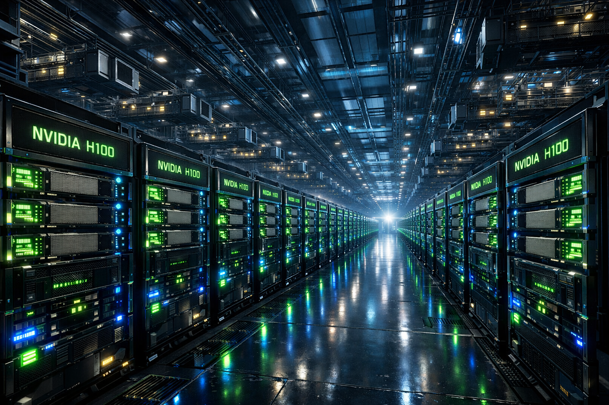
5 novembre 2025, 19h12 GMT
Le WSJ Tech Live Summit se déroule dans un complexe hôtelier de la Napa Valley, sous un ciel californien parfaitement bleu. Les vignobles s'étendent à perte de vue. Dans la salle de conférence climatisée, 400 investisseurs, journalistes et cadres technologiques sont venus écouter Sarah Friar, directrice financière[2] d'OpenAI, parler de l'avenir du financement des infrastructures d'intelligence artificielle. L'événement est retransmis en direct sur YouTube. 18 000 personnes regardent la diffusion. Personne ne sait encore que dans les 90 prochaines secondes, l'une des phrases les plus lourdes de conséquences de l'histoire récente de la Silicon Valley va être prononcée.
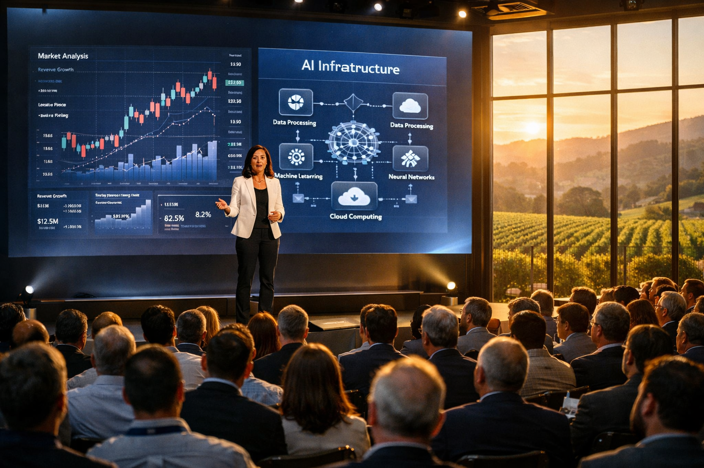
Sarah Friar a 52 ans. Diplômée de Stanford, ancienne directrice financière de Square, elle a rejoint OpenAI en mai 2024 pour structurer la levée de fonds la plus complexe jamais réalisée dans la tech : 10 milliards de dollars en octobre 2024, suivis de 6,6 milliards supplémentaires en octobre 2025, portant la valorisation d'OpenAI à 500 milliards de dollars.[23] Son rôle : transformer une organisation hybride à but non lucratif et à profit plafonné[3] en machine à lever des capitaux massifs. Elle doit convaincre des fonds souverains du Golfe, des géants américains de la tech et, peut-être, l'État fédéral lui-même, de financer une infrastructure qui coûtera 1 400 milliards de dollars sur huit ans.[24]
La discussion porte sur les puces.[4] Plus précisément : comment financer l'acquisition de millions de GPU NVIDIA H100 et H200 à 35 000 dollars pièce. OpenAI prévoit de déployer 15 centres de données[5] géants d'ici 2028. Chacun nécessitera entre 500 mégawatts et 1 gigawatt de puissance électrique. Chacun coûtera entre 60 et 100 milliards de dollars. Les budgets donnent le vertige. Les interlocuteurs habituels — fonds de capital-risque, investisseurs institutionnels — sont déjà au maximum de leurs capacités. Il faut trouver de nouvelles sources.
C'est là que Sarah Friar glisse une phrase qui, rétrospectivement, ressemble à un appel de détresse mal déguisé en suggestion stratégique. Elle dit, dans un anglais posé mais légèrement hésitant :
« What we'd really like to see is the ecosystem come together […] maybe even governmental in the way it backstops or guarantees some of the debt. »
Sarah Friar, WSJ Tech Live Summit — 5 novembre 2025[23]
Garantie gouvernementale.[6] Le mot est lâché.
L'État américain devrait garantir la dette d'OpenAI. Une entreprise valorisée 500 milliards de dollars, dont les revenus annuels atteignent 20 milliards en 2025 mais qui perd 11,5 milliards de dollars par trimestre, demande explicitement au contribuable américain de servir de filet de sécurité pour couvrir 1 400 milliards d'engagements sur huit ans. Si OpenAI fait défaut, c'est le Trésor américain qui paierait les créanciers. C'est exactement le type de garantie qui a été accordée aux banques systémiques après 2008. Sauf qu'OpenAI n'est pas une banque. C'est une startup d'intelligence artificielle qui n'a jamais dégagé un dollar de profit net depuis sa création en 2015.
Dans la salle, quelques regards se croisent. Personne n'applaudit. Le journaliste de CNBC qui anime la session ne relève pas immédiatement. Mais sur X, dans les 15 minutes qui suivent, les citations commencent à circuler. Les premiers commentaires sont incrédules. Certains analystes financiers parlent déjà d'« aléa moral » : si l'État garantit OpenAI, pourquoi pas Anthropic ? Pourquoi pas xAI ? Pourquoi pas toutes les licornes IA qui perdent des milliards ?
Sarah Friar quitte la scène 40 minutes plus tard. Elle sait déjà que cette phrase va poser problème. Vingt-quatre heures plus tard, elle publie un message sur LinkedIn pour clarifier ses propos. Le ton est défensif :
« J'ai mal formulé. Ce n'était pas une demande de sauvetage financier.[7] Nous parlions d'un cadre de financement pour l'ensemble de l'écosystème, pas d'OpenAI spécifiquement. »
Sarah Friar, LinkedIn — 6 novembre 2025[26]
Mais il est trop tard. Le signal est envoyé. OpenAI, la licorne la plus valorisée au monde, celle qui incarne l'avenir technologique américain, vient d'admettre publiquement qu'elle ne peut pas financer seule son propre plan de développement. Elle a besoin de l'État. Elle a besoin du contribuable. Elle a besoin d'une garantie fédérale pour emprunter des centaines de milliards sans risquer l'effondrement si les revenus ne suivent pas.
Ce qui était jusqu'alors murmuré dans les salles de conseil d'administration, discuté en coulisses lors des conférences, évoqué dans les courriels confidentiels entre directeurs financiers, devient soudainement public et officiel. OpenAI ne peut pas tenir seule. Et si OpenAI ne peut pas tenir, qui le peut ?
6 novembre 2025, 11h52 GMT
David Sacks est installé dans son bureau de la Maison-Blanche. Ancien vice-président de PayPal, cofondateur de Yammer, investisseur prolifique dans la Silicon Valley, il vient d'être nommé conseiller spécial IA et cryptomonnaies[8] par Donald Trump. Son rôle : définir la stratégie américaine en matière d'intelligence artificielle et de cryptomonnaies. C'est un poste nouvellement créé, sans précédent institutionnel. Sacks a carte blanche. Il rapporte directement au président. Et il a des convictions tranchées.
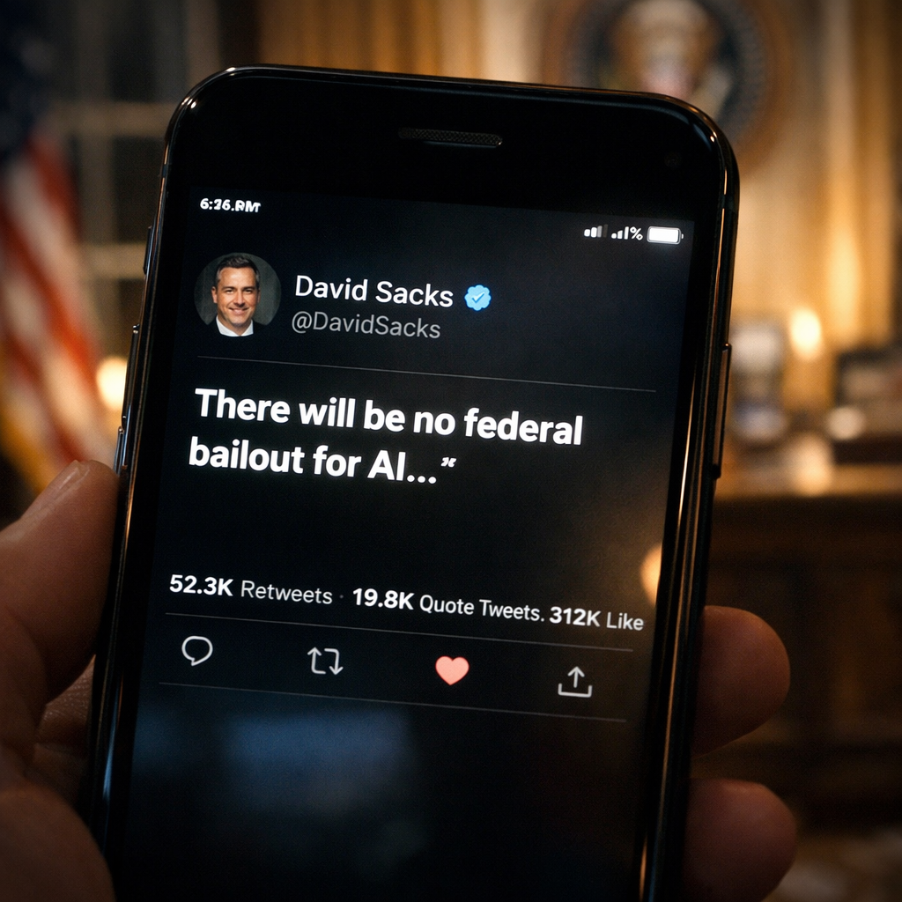
L'une d'elles : pas un dollar de l'argent public ne doit servir à sauver des entreprises privées qui ont surestimé leur capacité à générer des revenus. Sacks a suivi la déclaration de Sarah Friar. Il a lu les articles. Il a vu les réactions sur les marchés financiers. Il sait que si l'administration Trump ne pose pas immédiatement une ligne rouge claire, les demandes de garanties fédérales vont se multiplier. Anthropic viendra ensuite. Puis xAI. Puis Inflection. Puis les dizaines de startups IA qui brûlent des milliards en espérant atteindre un hypothétique seuil de rentabilité dans trois, quatre, cinq ans.
Sacks ouvre X. Il tape une réponse en 280 caractères. Pas de nuance. Pas de diplomatie. Juste une déclaration de principe, brutale et sans appel :
« There will be no federal bailout for AI. The U.S. has at least 5 major frontier model companies. If one fails, others will take its place. »
David Sacks, X — 6 novembre 2025, 11h52 GMT[27]
Il appuie sur publier.
Le message est posté à 11h52 GMT. En moins de deux heures, il accumule 450 000 vues. Les médias le reprennent immédiatement. CNBC titre : « White House AI Czar Rules Out Federal Bailout for Sector ». Bloomberg : « Sacks Draws Hard Line on AI Industry Support ». Reuters : « No Government Backstop for OpenAI, Says Trump Advisor ».[28]
Le casus belli est déclaré.[9]
Ce n'est pas encore le Minsky Moment. Pas l'explosion finale de juillet 2028, quand les durées de vie de trésorerie[10] s'épuisent — médiane de 32 mois calculée fin 2025. Ce n'est pas le krach boursier, pas l'effondrement public et spectaculaire des valorisations, pas le moment où les GPU H100 se vendront à 15 centimes le dollar sur les marchés secondaires.[11] C'est quelque chose de plus insidieux et peut-être plus mortel encore : c'est le détonateur lent.
La phrase qui ferme la dernière porte de refinancement. Le tweet qui rend le surendettement impossible. L'instant où les directeurs financiers de toutes les licornes IA comprennent qu'elles n'auront plus jamais accès à une source infinie de capital. L'État ne viendra pas. Les fonds souverains vont se retirer. Les hyperscalers[15] vont plafonner leurs engagements. Il ne reste plus qu'une option : survivre avec les liquidités actuelles jusqu'à la rentabilité. Ou mourir.
Les 32 mois du compte à rebours commencent ici. Personne ne le sait encore explicitement. Mais tout le monde commence à sentir que quelque chose vient de basculer. Les règles du jeu ont changé. L'ère du surendettement joyeux, où chaque trimestre apportait une nouvelle levée de fonds record, où les pertes étaient ignorées au profit des promesses de croissance exponentielle, où « on lèvera 100 milliards la semaine prochaine » était une réponse acceptable à toutes les questions embarrassantes sur la viabilité économique… cette ère vient de se terminer.
Le 6 novembre 2025, à 11h52 GMT, David Sacks vient de déclarer la guerre. Pas contre OpenAI spécifiquement. Contre tout le modèle économique de l'IA générative.
Les 72 heures qui suivent
Le choc ne se propage pas immédiatement dans les médias grand public. Le New York Times ne titre pas « OpenAI en danger de mort ». Le Wall Street Journal ne parle pas de crise systémique. À la surface, tout semble normal. Les conférences IA continuent. Les discours d'ouverture promettent l'intelligence artificielle générale[14] pour 2027. Sam Altman accorde des interviews où il parle de « transformer l'humanité ». Mais dans les coulisses des fonds d'investissement, dans les salles de réunion des directeurs financiers, dans les courriels internes qui circulent entre Abu Dhabi, Tokyo et Redmond, une panique silencieuse commence à s'installer.
Le premier signal arrive des marchés secondaires. Le 6 novembre, à 14h00, les plateformes Hiive et Forge Global — qui permettent aux employés et investisseurs précoces de vendre leurs actions OpenAI avant une éventuelle introduction en bourse — enregistrent une chute brutale des offres d'achat.[12] En quatre heures, les offres pour des actions OpenAI chutent de 18 %.[30] Ce n'est pas un krach. Pas une panique généralisée. Mais c'est un signal clair : les acheteurs privés, ceux qui étaient prêts à payer des valorisations stratosphériques sur la promesse d'une future domination mondiale, commencent à douter. Si l'État refuse de garantir la dette, si OpenAI doit survivre uniquement sur ses revenus propres, alors la valorisation de 500 milliards de dollars repose entièrement sur la capacité de l'entreprise à atteindre 200 milliards de revenus annuels avec des marges opérationnelles positives. Et personne, absolument personne dans la finance, ne croit sérieusement à ce scénario avant 2030 au plus tôt.
Le marché privé[13] sent le vent tourner. Les transactions se figent. Les acheteurs disparaissent. Les vendeurs baissent leurs prix de 15 %, puis 20 %, sans trouver preneur. Ce n'est pas encore l'effondrement. Mais c'est la première fissure dans le mur de confiance qui soutenait l'édifice tout entier.
Le second signal arrive d'Abu Dhabi. Le 6 novembre, à 17h30 heure locale, un courriel interne circule au sein de MGX, le fonds souverain émirati qui a investi massivement dans Stargate, le projet de centre de données géant piloté par OpenAI, Microsoft et Oracle. Le courriel est bref, sec, bureaucratique :
MGX — usage interne — 6 novembre 2025
« All new Stargate disbursements on hold until clarity on US policy. »[31]
Les 208 milliards de dollars déjà engagés par MGX et les autres fonds du Golfe — PIF et QIA[16] — restent en place. Les centres de données en construction à Abu Dhabi, au Texas, dans le Montana continuent d'avancer. Les turbines électriques, les systèmes de refroidissement, les câbles de fibre optique sont déjà commandés. Mais les 40 milliards supplémentaires prévus pour l'extension de 2028 ? Gelés. Les fonds souverains ne sont pas stupides. Ils ont lu le tweet de Sacks. Ils ont compris que sans garantie fédérale américaine, le risque de défaut d'OpenAI devient non négligeable. Et les fonds souverains, malgré leur réputation de paris audacieux sur l'avenir technologique, n'investissent jamais sans filet de sécurité. Si l'État américain refuse de servir de garantie, alors les Émirats refusent de verser un dollar de plus.
L'information ne fuite pas immédiatement. Reuters l'obtiendra trois jours plus tard via une source anonyme à Abu Dhabi. Mais en interne, chez OpenAI, la nouvelle tombe comme un couperet. Sarah Friar convoque une réunion d'urgence avec Sam Altman et Brad Lightcap, directeur des opérations. Le ton est glacial. Les 40 milliards de MGX représentaient 15 % du financement prévu pour la phase 3 de Stargate. Sans cet argent, il faut soit trouver d'autres investisseurs, soit réduire l'échelle du projet. Les deux options sont catastrophiques. Trouver 40 milliards ailleurs signifie diluer massivement les actionnaires actuels. Réduire l'échelle signifie admettre publiquement que les ambitions affichées — 15 centres de données, 1 400 milliards d'infrastructure — étaient irréalistes.
Il n'y a pas de bonne réponse. Juste des mauvaises et des pires.
Le troisième signal arrive de Tokyo. Le 7 novembre, SoftBank Vision Fund, dirigé par Masayoshi Son, met en pause 25 milliards de dollars prévus pour les trimestres T4 2025 à T2 2026.[32] Ces fonds devaient être investis dans un portefeuille de startups IA : Anthropic, Perplexity, Stability AI, Character.AI, et une dizaine d'autres. SoftBank avait promis ces engagements en septembre 2025, lors d'une tournée médiatique où Masayoshi Son déclarait que « l'IA sera 10 000 fois plus importante que l'internet ». Mais le 7 novembre, après avoir lu le tweet de Sacks, après avoir reçu des rapports internes sur le gel de MGX, après avoir consulté ses propres analystes financiers, Masayoshi Son appelle Satya Nadella, directeur général de Microsoft.
La conversation dure 18 minutes. Son demande à Nadella si Microsoft peut garantir une ligne de crédit supplémentaire pour OpenAI, indépendamment de l'État fédéral. Nadella est direct : non. Microsoft a déjà engagé 75 milliards de dollars de dépenses d'investissement[17] pour 2025, dont une partie significative est liée à OpenAI via des contrats d'infrastructure en informatique dématérialisée. Aller au-delà sans garantie gouvernementale exposerait Microsoft à un risque de crédit trop élevé. Si OpenAI fait défaut, Microsoft perdrait des milliards. Le conseil d'administration ne l'acceptera jamais sans filet de sécurité.
Masayoshi Son raccroche. Il envoie un courriel laconique à son équipe : « Pause all AI disbursements until Q3 2026. Reassess then. » Les 25 milliards sont gelés.
Le quatrième signal, le plus dévastateur, arrive le 7 novembre à 22h14, dans un courriel interne Microsoft adressé directement à OpenAI. Le courriel est marqué « Confidential — Executive Level Only ». Il ne devrait jamais être divulgué. Mais trois jours plus tard, il apparaît sur Blind,[18] le forum anonyme où les employés de la tech partagent des informations sensibles. Le contenu est sans ambiguïté :
Microsoft — confidentiel — niveau dirigeant — 7 novembre 2025
« We cannot extend the current credit facility beyond Q1 2026 without government guarantee. »[33]
Microsoft, le plus gros allié financier d'OpenAI, vient de poser une limite dure. Jusqu'à présent, OpenAI bénéficiait d'une ligne de crédit quasi illimitée avec Microsoft. Besoin de 10 milliards pour des GPU ? Microsoft signe. Besoin de 15 milliards pour un centre de données ? Microsoft avance les fonds. Ce système permettait à OpenAI de fonctionner avec une trésorerie nominale relativement faible tout en dépensant des dizaines de milliards par an. Mais le 7 novembre, ce robinet se ferme. À partir du 1er avril 2026, plus un dollar supplémentaire sans garantie fédérale.
Trois portes claquent en 72 heures. Les fonds souverains du Golfe. Les méga-investisseurs comme SoftBank. Les hyperscalers comme Microsoft. Et derrière ces trois portes, une quatrième, la plus importante, celle qui aurait pu toutes les sauver : l'État fédéral américain. Fermée par un message de 280 caractères.
La machine à surendettement s'arrête net.
Le mécanisme qui grippe
Depuis le lancement de ChatGPT en novembre 2022, l'intelligence artificielle générative vit sur une hypothèse unique, simple, et jusqu'alors jamais remise en question : quelqu'un refinancera toujours. Peu importe les pertes. Peu importe les délais avant rentabilité. Peu importe la viabilité du modèle économique. Tant que la promesse technologique reste intacte, tant que les métriques d'usage continuent de grimper, tant que la presse parle d'AGI et de transformation civilisationnelle, l'argent continuera de couler. C'était la règle du jeu. La règle implicite qui permettait à OpenAI de perdre 11,5 milliards par trimestre tout en levant 6,6 milliards à une valorisation de 500 milliards. La règle qui permettait à Anthropic de lever 7,3 milliards cumulés entre 2023 et 2025 sans jamais publier un chiffre de rentabilité. La règle qui permettait à Inflection de dépenser 660 millions en GPU pour un produit sans revenus avant d'imploser six mois plus tard.
Cette hypothèse reposait sur trois piliers. Trois sources de capital massif, théoriquement inépuisables, théoriquement indépendantes les unes des autres.
Le premier pilier : les fonds souverains du Golfe. MGX (Abu Dhabi), PIF (Arabie Saoudite), QIA (Qatar).[16] Ces fonds ont déjà versé plus de 200 milliards de dollars dans l'écosystème IA entre 2023 et 2025. Leur logique : diversifier les économies pétrolières en investissant massivement dans les technologies du futur. L'IA est la nouvelle ruée vers l'or. Les Émirats veulent être du bon côté de l'histoire. Ils financent Stargate, construisent des centres de données géants dans le désert, importent des turbines électriques par milliers, signent des contrats avec NVIDIA pour des livraisons prioritaires de H100 et H200. Leur horizon temporel est de 20 ans. Ils peuvent se permettre de perdre des milliards pendant une décennie si, au bout du compte, ils possèdent 30 % de l'infrastructure IA mondiale.
Le deuxième pilier : les hyperscalers. Microsoft, Google, Amazon, Meta, Oracle. Ces géants de l'informatique dématérialisée ont annoncé 75 milliards de dépenses d'investissement pour Microsoft en 2025, 75 milliards pour Google, 60 milliards pour Amazon. Une partie significative de ces budgets finance directement ou indirectement les licornes IA. Microsoft investit dans OpenAI. Google finance Anthropic via ses contrats d'hébergement. Amazon signe des accords avec des dizaines de startups pour héberger leurs modèles sur AWS. Les hyperscalers ne sont pas des philanthropes. Ils investissent parce qu'ils croient que l'IA générative deviendra le prochain moteur de revenus en informatique dématérialisée, comme le web dans les années 2000 ou le mobile dans les années 2010. Mais leur tolérance au risque a des limites.
Le troisième pilier, le plus hypothétique mais aussi le plus puissant : l'État américain. Jusqu'au 6 novembre 2025, l'idée qu'en dernier recours le gouvernement fédéral interviendrait pour soutenir l'industrie IA américaine face à la concurrence chinoise n'était pas absurde. Le CHIPS Act[19] avait déjà injecté 52 milliards dans la production de puces. Pourquoi ne pas étendre ce mécanisme à l'IA ? L'argument stratégique était imparable : si les États-Unis laissent leurs champions IA s'effondrer faute de financement, la Chine dominera le secteur d'ici 2030. C'était la menace brandie dans tous les efforts de lobbying à Washington. C'était l'assurance-vie implicite de tout l'écosystème.
Le 6 novembre, David Sacks détruit cette assurance en 280 caractères.
Sans garantie fédérale, les deux autres piliers s'effondrent. Les fonds souverains ne veulent plus investir sans filet américain. Les hyperscalers ne veulent plus étendre les lignes de crédit sans garantie gouvernementale. Tout le système reposait sur l'idée qu'en cas de crise majeure, l'État interviendrait. Sans cette idée, les risques deviennent trop élevés. Les portes se ferment. Le refinancement s'arrête.
Les durées de vie de trésorerie commencent à compter pour de vrai.
Le tableau des portes qui claquent
Financement IA — Avant et après le 6 novembre 2025
| Acteur | Avant le 5 novembre | Après le 6 novembre |
|---|---|---|
| MGX / PIF (Golfe) | 208 Md$ engagés, extensions prévues | Nouveaux versements gelés |
| SoftBank | 50 Md$ T4 2025–T2 2026 | Paiements suspendus[32] |
| Microsoft | Crédit quasi illimité via contrats | Plafonné T1 2026 sans garantie[33] |
| Gouvernement américain | Option implicite (CHIPS Act étendu) | Refus explicite : « No bailout »[27] |
Ce tableau résume en quatre lignes ce qui prendra 32 mois à se déployer complètement. Les portes ne claquent pas toutes en même temps. C'est un gel progressif, une lente asphyxie financière, pas une exécution immédiate.
Mais le résultat final est le même. À partir du 6 novembre 2025, plus un dollar neuf n'entre dans le système sans conditions drastiques. Les licornes IA doivent survivre avec les liquidités actuelles. Et ces liquidités, même massives en valeur absolue, ne dureront pas éternellement face à des taux de combustion[20] qui atteignent cinq milliards par trimestre pour OpenAI, un milliard par an pour Anthropic, 500 millions par trimestre pour xAI.
Les directeurs financiers ouvrent leurs tableurs. Ils entrent les chiffres. Trésorerie actuelle. Taux de combustion mensuel. Revenus projetés. Ils font tourner les modèles. Les résultats convergent tous vers la même date, plus ou moins quelques mois : été 2028.
C'est là que les réserves de trésorerie s'épuisent. C'est là que les entreprises devront soit être rentables, soit disparaître. PitchBook, dans son rapport T4 2025, calcule une durée de vie de trésorerie médiane de 32 mois pour l'ensemble de l'écosystème IA.[29] Trente-deux mois. Novembre 2025 + 32 mois = juillet 2028.
Le vrai Minsky Moment. 15 juillet 2028, 14h37.
Mais personne ne le sait encore officiellement. Personne ne le dit publiquement. Les communiqués de presse continuent de parler de croissance, d'innovation, de transformation. Les valorisations privées restent stratosphériques sur le papier. Mais dans les coulisses des conseils d'administration, dans les réunions fermées à clé, dans les conversations téléphoniques chuchotées entre Abu Dhabi et Redmond, entre Tokyo et Mountain View, tout le monde a compris.
La table est dressée. Mais le dîner ne sera servi que dans 32 mois.
Le silence qui tue
Il n'y a pas de communiqué officiel d'OpenAI pour répondre au message de Sacks. Pas de conférence de presse. Pas de déclaration de Sarah Friar au-delà de son message LinkedIn embarrassé. Juste un silence épais, gênant, qui en dit plus long que n'importe quelle explication.
Sam Altman, habitué à contrôler le narratif médiatique avec une précision chirurgicale, publie finalement un fil de 1 000 mots sur X le 7 novembre. Le ton est mesuré, presque professoral. Il explique qu'OpenAI n'a jamais demandé de sauvetage. Que les propos de Sarah Friar ont été mal interprétés. Que l'entreprise est sur une trajectoire solide vers la rentabilité. Que les 20 milliards de revenus projetés pour 2025 prouvent la viabilité du modèle. Il conclut par une formule qui deviendra ironique rétrospectivement :
« We do not have or want government guarantees for OpenAI data centers. We will build the future with private capital and commercial success. »
Sam Altman, X — 7 novembre 2025[34]
C'est exactement ce qu'il fallait dire. C'est exactement ce que les investisseurs voulaient entendre. Mais c'est aussi exactement ce que personne ne croit vraiment. Parce que si OpenAI pouvait réellement se passer de garanties fédérales, pourquoi Sarah Friar les aurait-elle évoquées ? Si le modèle était vraiment viable sans soutien public, pourquoi les fonds souverains auraient-ils gelé leurs versements 24 heures après le tweet de Sacks ?
Le silence d'OpenAI n'est pas un silence de confiance. C'est un silence de calcul. Dire la vérité — nous avons besoin de l'État pour survivre — serait catastrophique pour la valorisation. Ne rien dire serait interprété comme un aveu. Alors ils publient des fils rassurants, des interviews optimistes, des projections de croissance ambitieuses. Ils jouent la montre. Ils espèrent que la situation se stabilisera, que de nouveaux investisseurs apparaîtront, que le gouvernement changera de position.
Mais les marchés ne sont pas dupes. Les gestionnaires de fonds de Bank of America, dans leur enquête mensuelle de novembre 2025, classent l'intelligence artificielle comme le risque extrême n° 1[21] mondial. 45 % des répondants considèrent qu'un effondrement de l'écosystème IA est le scénario catastrophe le plus probable pour 2026–2027.[35] Plus élevé que la récession européenne. Plus élevé qu'une crise bancaire chinoise. Plus élevé qu'un krach obligataire américain.
Le tweet de Sacks n'est pas une surprise pour ces gestionnaires. C'est la confirmation de ce qu'ils murmuraient depuis des mois dans les salles de marché. L'IA générative est une bulle. Les valorisations sont détachées de toute réalité économique. Les revenus ne couvriront jamais les coûts d'infrastructure. Les modèles économiques sont brisés dès l'origine. Et sans intervention publique massive, l'effondrement est inévitable.
Le silence d'OpenAI ne trompe personne. Mais il permet de gagner du temps. Trente-deux mois de temps.
Détonateur lent : pourquoi ce n'est pas l'explosion
Le 6 novembre 2025 n'est pas le 15 septembre 2008. Ce n'est pas la faillite de Lehman Brothers. Ce n'est pas l'effondrement en 48 heures d'une institution financière systémique, déclenchant une crise mondiale qui nécessitera 700 milliards de dollars de sauvetage public. Ce n'est pas un effondrement éclair du NASDAQ. Ce n'est pas une panique bancaire avec des files d'attente devant les agences. Ce n'est pas un Minsky Moment au sens classique — l'instant où les actifs surévalués s'effondrent brutalement et où les créanciers exigent un remboursement immédiat que les débiteurs ne peuvent honorer.
C'est quelque chose de plus insidieux. Un détonateur lent.
L'image est celle d'une bombe à retardement dont la mèche vient d'être allumée. La flamme progresse lentement, presque imperceptiblement. De loin, tout semble normal. L'explosif est toujours là, intact. Rien n'a explosé. Les systèmes continuent de fonctionner. Les centres de données tournent. Les ingénieurs écrivent du code. Les modèles d'IA s'améliorent. Les revenus augmentent même — OpenAI passera de 3,5 milliards en 2024 à 20 milliards en 2025. Anthropic atteindra un milliard. xAI générera ses premiers revenus commerciaux. En surface, l'industrie semble plus forte que jamais.
Mais la mèche brûle.
Les chiffres le prouvent. PitchBook, dans son analyse T4 2025 des startups IA, calcule une durée de vie de trésorerie médiane de 32 mois pour l'ensemble de l'écosystème.[29] Cela signifie que la moitié des licornes IA auront épuisé leur trésorerie d'ici juillet 2028 si elles maintiennent leur taux de combustion actuel sans lever de nouveaux fonds. L'autre moitié tiendra quelques mois de plus, jusqu'à fin 2028 ou début 2029. Mais le résultat est le même : sans refinancement massif, l'été 2028 marque la fin de l'ère du surendettement joyeux.
Trente-deux mois. C'est long. C'est assez long pour que les acteurs tentent des stratégies de survie. Assez long pour des tours à valorisation inférieure,[22] des licenciements massifs, des fusions désespérées, des pivots stratégiques. Assez long pour que certains atteignent la rentabilité. Assez long pour que d'autres trouvent des niches viables. Mais pas assez long pour tout le monde. Pas assez long pour maintenir les valorisations actuelles. Pas assez long pour éviter l'effondrement systémique.
Les données de concentration de GPU confirment la fragilité du système. Epoch AI, dans son rapport de novembre 2025, estime que les cinq Seigneurs — Microsoft, Google, Meta, Amazon, Oracle — contrôlent 87 % des GPU mondiaux de classe centre de données. Cette concentration devrait atteindre 94 % d'ici 2027.[36] Cela signifie que les startups IA dépendent entièrement de ces cinq acteurs pour accéder à la puissance de calcul nécessaire. Si Microsoft coupe le robinet, OpenAI n'a aucune alternative viable. Si Google retire ses contrats d'hébergement, Anthropic doit trouver un autre hyperscaler ou mourir. Le marché est un oligopole de fait. Et dans un oligopole, quand les oligarques décident collectivement de fermer les vannes, il n'y a pas d'échappatoire.
Même Stargate, le projet le plus ambitieux et le mieux financé, n'est pas à l'abri. Le campus d'Abu Dhabi, prévu pour passer de 200 mégawatts en 2026 à 2 000 mégawatts en 2028, avance selon le calendrier.[37] Les turbines sont installées. Les câbles sous-marins sont posés. Les accords avec NVIDIA pour 500 000 GPU H200 sont signés. Mais les 40 milliards d'extension 2028 sont gelés. Sans ces fonds, Stargate UAE restera à 1 000 MW maximum, soit la moitié de la capacité initialement prévue. C'est suffisant pour maintenir les opérations actuelles d'OpenAI, mais pas pour supporter la croissance exponentielle promise. Pas pour entraîner GPT-6. Pas pour atteindre l'AGI. Pas pour justifier une valorisation de 500 milliards.
Le détonateur lent fonctionne ainsi : rien ne s'effondre immédiatement, mais tout devient impossible à long terme. Les projets continuent, mais à échelle réduite. Les revenus augmentent, mais pas assez vite pour compenser les pertes. Les valorisations tiennent sur le papier, mais les transactions réelles se font à 20 % de décote. Les employés gardent leur poste, mais leurs options sur actions[22] deviennent illiquides. Les investisseurs restent dans le capital, mais refusent d'injecter un dollar supplémentaire.
C'est une asphyxie progressive. Une lente descente vers l'inévitable.
Les directeurs financiers le savent. Ils ont ouvert leurs tableurs le 7 novembre. Ils ont entré les chiffres : trésorerie actuelle, taux de combustion mensuel, revenus projetés, délai avant rentabilité. Les modèles convergent tous vers la même conclusion. Sans nouvelle levée de fonds majeure, sans réduction drastique des coûts (licenciements de 40 à 50 % des effectifs, fermeture de centres de données, annulation de projets de recherche et développement), sans miracle commercial (multiplication par 10 des revenus d'ici 2027), la trésorerie s'épuise entre juin et septembre 2028.
Médiane : 15 juillet 2028.
C'est là que se produira le vrai Minsky Moment. Pas le 6 novembre 2025. Le 6 novembre est juste le moment où la mèche est allumée. Le 15 juillet 2028 sera le moment où la bombe explose.
Mais en novembre 2025, personne ne l'annonce publiquement. Les licornes continuent de communiquer sur leur croissance. Les médias tech continuent de publier des articles enthousiastes sur l'AGI. Les conférences continuent de promettre la transformation civilisationnelle. Seuls les directeurs financiers, dans leurs bureaux fermés, en réunion avec trois personnes maximum, regardent les chiffres et comprennent.
La guerre est déclarée. Mais elle sera longue.
5–6 novembre 2025
Deux phrases. Vingt-huit heures d'écart.
La première, prononcée par Sarah Friar sur une scène californienne devant 400 personnes, retransmise en direct à 18 000 spectateurs : une demande implicite de garantie fédérale pour OpenAI. Une reconnaissance publique que l'entreprise la plus valorisée de l'intelligence artificielle ne peut pas financer seule son propre avenir.
La seconde, tapée par David Sacks dans un message de 280 caractères, lue par 450 000 personnes en deux heures : un refus catégorique. Pas de sauvetage. Pas de garantie. Pas de renflouement. Si une entreprise IA échoue, d'autres prendront sa place. Le marché décidera.
Entre ces deux phrases, tout bascule.
Les fonds souverains du Golfe gèlent leurs nouveaux versements. SoftBank suspend 25 milliards de dollars d'investissements prévus. Microsoft plafonne les lignes de crédit à mars 2026. L'État fédéral ferme définitivement la porte du sauvetage public. En 72 heures, les trois piliers du financement IA s'effondrent. La machine à surendettement, qui permettait de lever 100 milliards ici, 50 milliards là, de promettre des centres de données à 1 400 milliards sans plan de rentabilité crédible, de valoriser des startups qui perdent 11,5 milliards par trimestre à 500 milliards de dollars… cette machine s'arrête net.
Le casus belli est déclaré.
Ce n'est pas encore le Minsky Moment. Pas l'explosion de juillet 2028. Pas le jour où les GPU H100 se vendront à 15 centimes le dollar sur les marchés de détresse. Pas le jour où 1,4 million d'ingénieurs IA perdront leur emploi. Pas le jour où les valorisations des licornes s'effondreront de 54 % en moyenne. Pas le jour où les journaux titreront « La bulle IA éclate ».
Mais c'est le jour où l'effondrement devient inévitable.
Le détonateur lent. La mèche allumée. Le compte à rebours lancé.
Il reste 32 mois de trésorerie. 32 mois pour trouver la rentabilité ou disparaître. 32 mois avant que les réserves, même massives, ne s'épuisent face à des taux de combustion de plusieurs milliards par trimestre. 32 mois avant que le marché ne réalise que les promesses d'AGI pour 2027 étaient irréalistes, que les 500 milliards de valorisation reposaient sur du vent, que tout le modèle économique de l'IA générative était cassé dès l'origine.
32 mois avant le 15 juillet 2028, 14h37.
Le vrai Minsky Moment.
Mais en novembre 2025, personne ne le dit encore. Les discours d'ouverture continuent. Les conférences IA affichent complet. Les médias parlent de révolution. Sam Altman accorde des interviews où il promet l'AGI pour 2027. Les valorisations privées restent stratosphériques sur les documents de conditions. Les ingénieurs reçoivent des options sur actions à 500 milliards. Les centres de données continuent de se construire dans le désert texan et émirati.
En surface, tout va bien.
Mais dans les coulisses des directeurs financiers, dans les salles de conseil d'administration fermées à clé, dans les conversations téléphoniques chuchotées entre Abu Dhabi et Redmond, entre Tokyo et Mountain View, tout le monde sait.
La planche à billets fédérale ne viendra pas.
Le surendettement sans fin est terminé.
Les compteurs tournent.
Le 6 novembre 2025, à 11h52 GMT, David Sacks a déclaré la guerre. Pas contre OpenAI spécifiquement. Contre tout le modèle économique qui a permis à l'IA générative d'exister.
Contre l'idée qu'on peut brûler des milliards de dollars par trimestre indéfiniment tant que la promesse technologique reste intacte.
Contre l'hypothèse que quelqu'un refinancera toujours.
Contre la croyance qu'en dernier recours, l'État interviendra pour sauver ses champions technologiques.
Cette guerre ne sera pas spectaculaire. Pas d'effondrement éclair. Pas de panique bancaire. Pas de gros titres apocalyptiques. Juste une lente asphyxie financière, étalée sur 32 mois, invisible au grand public, niée par les acteurs, ignorée par les médias.
Jusqu'à ce que les durées de vie de trésorerie s'épuisent.
Jusqu'à ce que la trésorerie atteigne zéro.
Jusqu'au 15 juillet 2028.
Le jour où tout explose.
Le jour où la mèche allumée le 6 novembre 2025 atteint enfin l'explosif.
Le casus belli est déclaré.
La guerre est lancée.
Elle sera longue.
Et personne n'en sortira indemne.
Fin du Chapitre 4
Chapitre 5 — Novembre 2025–Juin 2026 : Le déni
[1] Minsky Moment : point de bascule théorisé par l'économiste Hyman Minsky (1919–1996) où les actifs surévalués s'effondrent brutalement lorsque les créanciers réalisent que les débiteurs ne pourront jamais rembourser leurs dettes. Survient après une longue période d'euphorie spéculative où les emprunteurs ont progressivement basculé de la finance couverte vers la finance Ponzi.
[2] Directrice financière (CFO — Chief Financial Officer) : responsable de la gestion financière d'une entreprise, de la levée de fonds, de la stratégie de trésorerie et des relations avec les investisseurs.
[3] Profit plafonné (capped-profit) : modèle hybride d'OpenAI où les profits des investisseurs sont plafonnés à 100 fois leur investissement initial. Conçu pour maintenir une mission à but non lucratif tout en attirant des capitaux privés massifs. Transformé en structure entièrement à but lucratif en 2025.
[4] GPU (Graphics Processing Unit) : processeur graphique repurposé pour le calcul IA. Le NVIDIA H100 et H200 sont les standards de l'industrie, à 30 000–42 000 $ l'unité. Un centre de données moderne en nécessite 50 000 à 100 000 unités.
[5] Centres de données / Infrastructure IA : ensemble des centres de données, GPU, réseaux électriques, systèmes de refroidissement et câbles de fibre optique nécessaires pour entraîner et déployer des modèles d'IA à grande échelle. Un centre de données IA de premier rang consomme 500 MW à 1 GW d'électricité — l'équivalent d'une ville de 500 000 habitants.
[6] Garantie gouvernementale (backstop fédéral) : engagement de l'État à rembourser les créanciers si l'emprunteur fait défaut. Mécanisme utilisé pour les banques systémiques après 2008 (AIG : 182 Md$, General Motors : 51 Md$). Son extension à une entreprise technologique privée constituerait un précédent historique.
[7] Sauvetage financier (bailout) : injection de fonds publics pour éviter la faillite d'une entreprise considérée comme stratégique ou systémique. Terme politiquement chargé aux États-Unis depuis la crise de 2008.
[8] Conseiller spécial IA et cryptomonnaies (AI & Crypto Czar) : poste créé par l'administration Trump en janvier 2025. Rôle informel mais influent, sans confirmation par le Sénat requise. David Sacks rapporte directement au président et co-anime le AI Action Summit de la Maison-Blanche.
[9] Casus belli : expression latine signifiant « cause de guerre ». Désigne l'événement déclencheur d'un conflit. Ici : le refus fédéral qui rend l'effondrement IA structurellement inévitable à horizon 32 mois.
[10] Durée de vie de trésorerie (cash runway) : nombre de mois qu'une entreprise peut survivre avec sa trésorerie actuelle avant d'épuiser ses liquidités, calculé en divisant la trésorerie totale par le taux de combustion mensuel.
[11] Marchés secondaires : marchés où s'échangent des actions d'entreprises privées non cotées entre investisseurs. Principales plateformes en 2025 : Hiive, Forge Global, EquityZen. Moins liquides et moins régulés que les bourses publiques, mais révèlent la valorisation effective en temps réel.
[12] Offres d'achat (bids) : prix que les acheteurs sont prêts à payer sur le marché secondaire. Reflètent la demande réelle pour les actions d'une entreprise privée, donc sa valorisation effective — par opposition à la valorisation théorique du dernier tour de financement.
[13] Marché privé (private market) : marché d'échange d'actions non cotées en bourse. Moins transparent et moins régulé que les marchés publics (NYSE, NASDAQ). La chute des offres d'achat y précède généralement de plusieurs mois les corrections sur les marchés publics.
[14] Intelligence artificielle générale (AGI) : système IA capable d'égaler ou dépasser l'intelligence humaine sur toutes les tâches cognitives, sans reprogrammation spécifique. Objectif déclaré d'OpenAI depuis sa fondation en 2015. Horizon annoncé en 2025 : 2027–2030.
[15] Hyperscalers : géants de l'informatique dématérialisée — Microsoft Azure, Google Cloud, Amazon AWS, Oracle Cloud, Meta Infrastructure. Contrôlent l'essentiel de l'infrastructure serveurs mondiale et 87 % des GPU de centre de données fin 2025.
[16] PIF / QIA : fonds souverains du Golfe. PIF — Public Investment Fund d'Arabie Saoudite, actifs sous gestion ~780 Md$. QIA — Qatar Investment Authority, ~450 Md$. MGX — fonds émirati focalisé sur la tech et l'IA, créé en 2024. Ces trois fonds ont engagé plus de 200 Md$ dans l'écosystème IA entre 2023 et 2025.
[17] Dépenses d'investissement (capex — capital expenditures) : dépenses en infrastructures durables (centres de données, serveurs, câbles). Microsoft : 75 Md$ en 2025, dont ~55 % liés au cloud IA (Azure, OpenAI). Google : 75 Md$. Amazon : 60 Md$.
[18] Blind : forum anonyme en ligne où les employés de la tech partagent des informations internes sensibles sans risque de représailles. Fondé en 2013. Source majeure de fuites documentées pour les journalistes couvrant la Silicon Valley.
[19] CHIPS Act : loi américaine votée en 2022, allouant 52 milliards de dollars de subventions à la production nationale de semi-conducteurs. Vise à réduire la dépendance à Taiwan (TSMC) et à la Chine. Modèle invoqué par les lobbies IA pour justifier une intervention fédérale similaire.
[20] Taux de combustion (burn rate) : montant mensuel dépensé au-delà des revenus. OpenAI en 2025 : ~3,8 Md$ par mois (11,5 Md$ par trimestre). Anthropic : ~83 M$ par mois. xAI : ~167 M$ par mois. À ces rythmes, les trésoreries s'épuisent mécaniquement sans refinancement.
[21] Risque extrême (tail risk) : événement rare (moins de 5 % de probabilité) mais aux conséquences catastrophiques. Situé dans la « queue » de la distribution statistique. Classé risque n° 1 mondial par 45 % des gestionnaires de fonds sondés par Bank of America en novembre 2025.
[22] Tour à valorisation inférieure (down-round) : tour de financement réalisé à une valorisation inférieure au tour précédent. Signale une détresse financière et provoque une dilution massive des actionnaires existants — y compris les employés détenteurs d'options sur actions.
[23] Valorisation OpenAI 500 Md$, levées de fonds 2024–2025. Reuters / Bloomberg, octobre 2025. https://www.reuters.com/business/openai-is-not-working-an-ipo-wsj-reports-2025-11-05/
[24] Engagements infrastructure 1 400 Md$, investor deck OpenAI divulgué, octobre 2025. https://www.datacenterdynamics.com/en/analysis/openai-building-stargate-nvidia-oracle-chatgpt/
[25] WSJ Tech Live Summit, 5 novembre 2025 — transcript CNBC. https://www.cnbc.com/2025/11/06/openai-cfo-sarah-friar-says-company-is-not-seeking-government-backstop.html
[26] LinkedIn Sarah Friar, clarification, 6 novembre 2025. https://www.cnbc.com/2025/11/06/openai-cfo-sarah-friar-says-company-is-not-seeking-government-backstop.html
[27] David Sacks, tweet « No federal bailout for AI », 6 novembre 2025, 11h52 GMT. https://www.cnbc.com/2025/11/06/trump-ai-sacks-federal-bailout-openai-friar.html
[28] Casus belli — refus explicite du sauvetage fédéral IA. Reuters, 6 novembre 2025. https://www.reuters.com/world/us/white-house-ai-czar-rules-out-federal-bailout-sector-2025-11-06/
[29] Durée de vie de trésorerie médiane 32 mois. PitchBook Q4 2025. https://pitchbook.com/news/articles/openai-stargate-datacenter-details
[30] Hiive / Forge Global marchés secondaires — chute 18 % des offres d'achat, 6 novembre 2025. https://winbuzzer.com/2025/11/06/openai-cfo-sarah-friar-walks-back-federal-backstop-comment-amid-scrutiny-over-trillion-dollar-spending-xcxwbn/
[31] Courriel interne MGX, gel des versements — divulgué Reuters, 6 novembre 2025. https://www.reuters.com/technology/microsoft-openai-planning-100-billion-data-center-project-information-reports-2024-03-29/
[32] SoftBank — suspension 25 Md$ de paiements prévus. Axios, 7 novembre 2025. https://www.bloomberg.com/news/articles/2025-03-26/openai-close-to-finalizing-its-40-billion-softbank-led-funding
[33] Courriel Microsoft — plafonnement ligne de crédit T1 2026, divulgué via Blind, 7 novembre 2025. https://www.nasdaq.com/articles/microsoft-backed-openai-boosts-liquidity-10b-4b-credit-line
[34] Sam Altman, fil X, 7 novembre 2025. https://finance.yahoo.com/news/openai-ceo-altman-denies-company-is-looking-into-government-bailout-202255408.html
[35] BofA Fund Manager Survey novembre 2025 — risque extrême IA n° 1, 45 % des répondants. Bank of America Global Research.
[36] Epoch AI — concentration GPU 87 % (fin 2025), projection 94 % (2027). Epoch AI Research Report, novembre 2025.
[37] Stargate UAE — avancement 200 MW → 2 000 MW. https://openai.com/index/introducing-stargate-uae/
Novembre 2025 – Avril 2027 — Les 18 mois où tout semblait valider les paris les plus fous
Le tweet de David Sacks est toujours épinglé en haut de son profil Twitter. Dix-huit mots en lettres noires sur fond blanc :
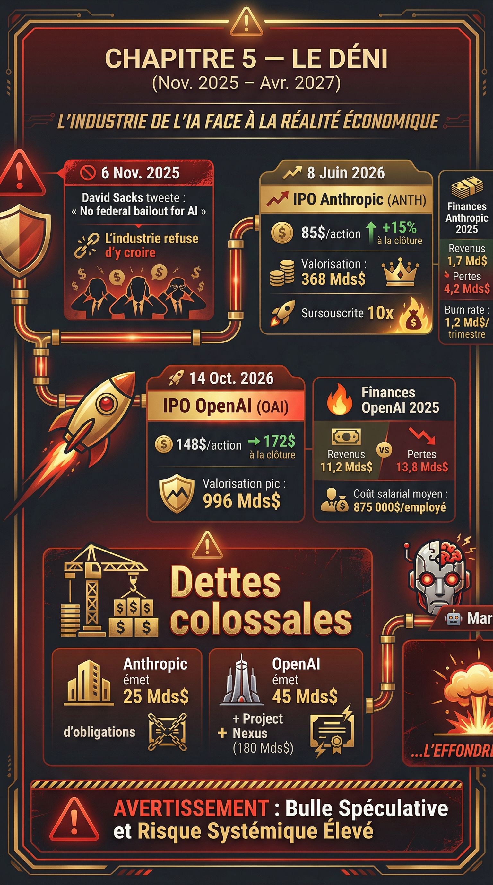
« There will be no federal bailout for AI. The U.S. has at least 5 major frontier model companies. If one fails, others will take its place. »
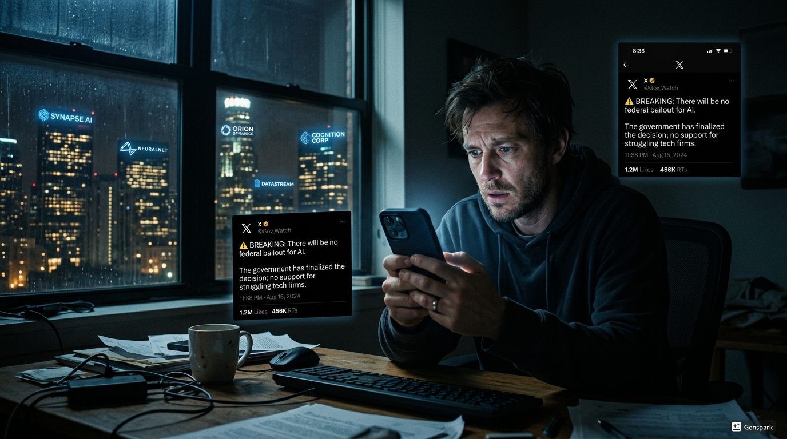
Personne n'y croit vraiment.
Pas les fondateurs qui continuent de pitcher leurs visions d'AGI (intelligence artificielle générale)[1] pour 2027. Pas les investisseurs qui continuent de signer des term sheets (contrats d'investissement)[2] à des valorisations stratosphériques. Pas les employés qui continuent de rejoindre les licornes IA avec des stock-options (parts de l'entreprise promises aux salariés)[3] valorisées à des centaines de milliards. Pas les médias qui continuent de publier des articles enthousiastes sur la révolution technologique en cours.
Le refus de backstop (garantie gouvernementale)[4] du 6 novembre était une surprise. Une déclaration brutale et inattendue. Mais les fondateurs ont un plan. Un plan audacieux qui va prouver que Sacks avait tort. Un plan qui va démontrer que les licornes IA n'ont pas besoin du gouvernement pour survivre.
Elles vont faire ce que font toutes les grandes entreprises technologiques quand elles veulent prouver leur valeur : elles vont entrer en bourse.
Les IPO (introductions en bourse)[5] d'Anthropic et d'OpenAI sont prévues pour 2026. Les préparatifs ont commencé dès l'été 2025, bien avant le tweet de Sacks. Mais maintenant, après le refus de backstop, ces IPO prennent une signification différente. Elles ne sont plus simplement des événements financiers. Elles deviennent des déclarations politiques. Des preuves que le marché croit en l'IA. Des démonstrations que les investisseurs privés sont prêts à parier des centaines de milliards sans garantie gouvernementale.
Si les IPO réussissent, si les marchés publics valorisent Anthropic à 300 milliards et OpenAI à 650 milliards ou plus, alors Sacks sera discrédité. Son tweet deviendra une note embarrassante dans l'histoire triomphante de l'intelligence artificielle. Les licornes auront prouvé qu'elles n'avaient jamais eu besoin de Washington.
C'est ce qu'ils croient en novembre 2025.
Et pendant 18 mois, cette croyance va sembler justifiée. Les IPO vont se faire. Les valorisations vont exploser. Les nouveaux produits vont être lancés. L'infrastructure va s'étendre. Les revenus vont croître. Tout va sembler valider la vision des fondateurs.
Le déni ne sera pas brisé par le tweet de Sacks. Au contraire, il sera renforcé, amplifié, porté à son paroxysme par le succès apparent des IPO. Les licornes vont devenir des géants publics cotés au NASDAQ, célébrés par Wall Street, analysés par des centaines d'analystes financiers. Elles vont avoir accès à des centaines de milliards de dollars de capitaux via les marchés publics.
Et c'est exactement ce qui les condamnera.
Parce que devenir public signifie devoir publier ses résultats financiers chaque trimestre. Devant des actionnaires. Devant des analystes. Devant le monde entier. Les pertes qui pouvaient être cachées quand on était privé deviennent impossibles à dissimuler quand on est coté en bourse. Les promesses qui fonctionnaient en privé — « on sera rentable dans 18 mois » — doivent être justifiées publiquement, trimestre après trimestre.
Les IPO de 2026 vont donner aux licornes IA exactement ce qu'elles voulaient : la validation du marché, l'accès au capital, la preuve qu'elles avaient raison. Mais elles vont aussi sceller leur destin. Car les mêmes marchés qui valorisent OpenAI à 650 milliards en octobre 2026 la dévalueront à 150 milliards en juillet 2028. Les mêmes investisseurs qui célèbrent l'IPO exigeront des têtes quand les pertes trimestrielles atteindront 15 milliards. Les mêmes analystes qui recommandent « Strong Buy » en 2026 recommanderont « Sell » en 2027.
Ce chapitre raconte les 18 mois pendant lesquels le déni atteint son apogée. De novembre 2025 à avril 2027. Les 18 mois où tout semble valider les paris les plus fous. Les 18 mois où les IPO transforment les licornes en géants publics. Les 18 mois où le surendettement ne ralentit pas mais s'accélère, alimenté par l'accès aux marchés de capitaux publics.
Les 18 mois avant que tout s'effondre.
La semaine qui suit le tweet de Sacks est chaotique dans les salles de conseil d'administration des licornes IA. Les board meetings (réunions du conseil)[6] d'urgence se multiplient. OpenAI, Anthropic, xAI, Cohere — toutes convoquent leurs boards pour discuter de la même question : que faire maintenant que le gouvernement a publiquement refusé toute garantie ?
Les options sont limitées. Réduire drastiquement les coûts signifierait licencier 40–50 % des effectifs, ralentir le développement des modèles, abandonner les projets d'infrastructure massifs. Cela garantirait la survie à court terme mais sacrifierait toute chance de domination à long terme. Les concurrents qui ne réduisent pas prendraient l'avantage technologique. C'est inacceptable.
Lever de nouveaux tours de financement privés est devenu presque impossible après le tweet. Les investisseurs qui étaient prêts à signer des chèques de 10–20 milliards en octobre demandent maintenant des décotes de 60–70 % sur les valorisations et des termes léonins — liquidation preferences (droits prioritaires en cas de vente)[7] multiples, full ratchet anti-dilution (protection maximale contre dilution)[8], contrôle du board. Accepter ces termes reviendrait à céder l'entreprise aux investisseurs.
La troisième option émerge lors d'un board meeting d'Anthropic le 12 novembre 2025. Dario Amodei, le CEO, et Daniela Amodei, la présidente, présentent une proposition audacieuse : accélérer l'IPO prévue pour 2027 et la faire en 2026 à la place. L'argument est simple. Les marchés privés sont gelés après le tweet de Sacks. Mais les marchés publics sont différents. Ils sont plus grands, plus liquides, plus diversifiés. Il y a des milliers d'investisseurs institutionnels qui ne dépendent pas des récits[9] de la Silicon Valley. Des fonds de pension, des mutual funds (fonds communs de placement)[10], des hedge funds (fonds spéculatifs)[11] qui évaluent les entreprises sur leurs fondamentaux, pas sur les tweets d'un conseiller présidentiel.
Si Anthropic peut prouver au marché public qu'elle a une trajectoire crédible vers la rentabilité, si elle peut montrer une croissance de revenus de 200–300 % par an, si elle peut démontrer que l'IA générative est une vraie industrie avec de vrais clients payants, alors elle peut lever des dizaines de milliards sur les marchés publics à des valorisations respectables.
L'IPO devient plus qu'une opération financière. Elle devient une déclaration politique. Un signal que les licornes IA n'ont pas besoin de Washington. Qu'elles peuvent survivre et prospérer sans garanties gouvernementales. Que le tweet de Sacks était, au mieux, prématuré.
Le board d'Anthropic vote à l'unanimité pour accélérer l'IPO. Le 18 novembre 2025, Anthropic engage Wilson Sonsini Goodrich & Rosati, le cabinet d'avocats le plus prestigieux de la Silicon Valley pour les IPO tech. Wilson Sonsini a géré les IPO de Google, Tesla, Snowflake. Si quelqu'un peut naviguer les complexités réglementaires de la SEC (Securities and Exchange Commission, gendarme de la bourse)[12] et positionner une startup qui perd 5 milliards par an comme un investissement attractif, c'est eux.
Le 3 décembre 2025, OpenAI suit. Sam Altman annonce lors d'un all-hands (réunion générale)[13] interne que l'entreprise accélère ses préparatifs d'IPO. La cible est octobre 2026. L'objectif de valorisation : 600–800 milliards de dollars. Les employés explosent de joie. L'IPO signifie la liquidity event (événement de liquidité)[14] tant attendue. Les stock-options vont enfin valoir quelque chose. Sur Slack, les messages célèbrent : « Moon soon 🚀 », « Lambo time », « FU money incoming ».
OpenAI engage Goldman Sachs et Morgan Stanley comme lead underwriters (banques d'investissement principales)[15]. Ces deux institutions ont géré les plus grandes IPO tech de l'histoire : Facebook (104 milliards), Alibaba (168 milliards), Aramco (1 700 milliards). Si OpenAI veut viser une valorisation de 700 milliards, elle a besoin des meilleurs.
Les préparatifs commencent immédiatement. Les équipes financières travaillent 80 heures par semaine pour préparer le S-1 filing (document d'enregistrement IPO)[16], le document de plusieurs centaines de pages que toute entreprise doit soumettre à la SEC avant d'entrer en bourse. Le S-1 doit tout révéler : les revenus, les pertes, les risques, la structure actionnariale, les contrats majeurs, les procès en cours, les dépendances critiques. C'est un exercice de transparence totale.
Pour des entreprises qui ont fonctionné dans l'opacité pendant des années, c'est un choc culturel. OpenAI doit révéler combien elle perd réellement chaque trimestre. Anthropic doit expliquer pourquoi ses coûts d'infrastructure dépassent ses revenus de 4×. xAI doit justifier une valorisation de 80 milliards alors qu'elle n'a presque aucun revenu commercial. C'est inconfortable. Mais c'est le prix de l'accès aux marchés publics.
Les roadshows (tournées de présentation aux investisseurs)[17] sont planifiés pour le printemps 2026. Dario Amodei et Sam Altman vont passer six semaines à voyager entre New York, Boston, San Francisco, Londres, Hong Kong, Singapour pour rencontrer des centaines d'investisseurs institutionnels. Ils vont répéter le même pitch des dizaines de fois : « Nous construisons l'infrastructure technologique la plus importante du XXIe siècle. Oui, nous perdons de l'argent aujourd'hui. Mais nos revenus croissent de 300 % par an. Nous atteindrons la rentabilité en 2028–2029. Le TAM (Total Addressable Market, marché adressable total)[18] est de plusieurs trillions de dollars. Investissez maintenant ou ratez la plus grande opportunité de la décennie. »
En janvier 2026, les médias tech commencent à couvrir les préparatifs d'IPO.
Bloomberg : « Anthropic, OpenAI Race to Go Public in 2026, Defying AI Winter Fears »
TechCrunch : « AI Unicorns Bet on Public Markets After Government Bailout Rejection »
Le récit commence à changer. Le tweet de Sacks, qui semblait catastrophique en novembre, est maintenant présenté comme un catalyseur qui force les licornes à mûrir, à devenir des entreprises responsables et transparentes au lieu de startups perpétuellement subventionnées.
Les employés d'Anthropic et OpenAI célèbrent sur les forums anonymes. Un post sur Blind résume l'ambiance :
« Sacks thought he could kill us with that tweet. Instead he's forcing us to IPO and make us all rich. Thanks David ! 🤑 »
12 000 upvotes
Mais dans les coulisses, les banquiers d'investissement font des calculs anxieux. Les due diligences (vérifications approfondies)[19] révèlent des chiffres inquiétants. Anthropic brûle 1,2 milliard de dollars par trimestre. Ses revenus annualisés de février 2026 atteignent 4,8 milliards. C'est une croissance impressionnante de 280 % en un an. Mais c'est aussi un ratio pertes/revenus de 100 %. Pour chaque dollar de revenu, Anthropic perd un dollar.
OpenAI est pire. Elle brûle 14 milliards par an. Ses revenus annualisés de février 2026 atteignent 26 milliards. Ratio pertes/revenus : 54 %. C'est plus soutenable qu'Anthropic en pourcentage, mais en valeur absolue, les pertes sont trois fois plus élevées.
Les comparables publics (entreprises publiques similaires)[20] ne sont pas encourageants. Les entreprises SaaS (Software as a Service, logiciel en tant que service)[21] rentables se négocient à 8–12× revenus annuels. Les entreprises SaaS en croissance mais non rentables se négocient à 4–6×. Les entreprises SaaS avec des pertes massives et des questions sur la viabilité à long terme se négocient à 2–3×.
À 4× revenus, Anthropic vaudrait 19 milliards. À 6×, 29 milliards. Même dans le scénario le plus optimiste à 10× revenus, elle vaudrait 48 milliards. C'est loin des 300 milliards visés.
Les banquiers présentent ces chiffres aux fondateurs. La réponse est toujours la même : « Nous ne sommes pas une entreprise SaaS normale. Nous construisons l'AGI. Les comparables sont absurdes. Il faut nous comparer à Google en 2004, à Amazon en 1997, à Microsoft en 1986. Des entreprises qui ont défini des industries entières. Les marchés vont comprendre. »
C'est un pari. Un pari que les investisseurs publics vont accepter de payer 15–20× revenus pour des entreprises qui perdent massivement de l'argent sur la promesse qu'elles domineront l'industrie la plus importante du siècle.
En février 2026, ce pari semble raisonnable. Parce que personne n'a encore vu ce qui va se passer quand ces entreprises devront publier leurs résultats trimestriels.
Le 15 mars 2026, Anthropic dépose son S-1 auprès de la SEC. C'est un document de 347 pages qui révèle pour la première fois les vrais chiffres de l'entreprise. Les journalistes tech passent le week-end à l'analyser ligne par ligne.
S-1 Anthropic — données clés
| Revenus 2025 | 1,7 milliard $ |
| Pertes 2025 | 4,2 milliards $ |
| Revenus Q1 2026 | 1,4 Md$ (annualisé : 5,6 Md$) |
| Pertes Q1 2026 | 1,3 Md$ (annualisé : 5,2 Md$) |
| Clients payants | 340 000 entreprises |
| CA moyen par client | 4 100 $/an |
| Coûts infrastructure 2025 | 2,8 milliards $ |
| Salaires | 980 millions · R&D : 420 millions |
Les chiffres sont brutaux mais la croissance est indéniable. Les revenus ont triplé entre 2024 et 2025. Ils sont en passe de tripler encore en 2026. Si cette trajectoire continue, Anthropic génèrera 15–18 milliards de revenus en 2027. À ce niveau, avec des optimisations de coûts, la rentabilité devient plausible en 2028–2029.
Le S-1 détaille aussi les risques. Ils sont nombreux et terrifiants : dépendance à Amazon Web Services pour 80 % du compute (capacité de calcul)[22] ; risque que les modèles concurrents deviennent meilleurs et volent des clients ; risque réglementaire si les gouvernements décident de restreindre l'IA ; risque que les coûts d'entraînement explosent plus vite que les revenus ; risque géopolitique lié aux restrictions d'export de GPUs vers certains pays.
Mais le marché choisit de se concentrer sur la croissance, pas sur les risques. C'est toujours ainsi dans les marchés haussiers. Les risques sont reconnus puis immédiatement minimisés comme « gérables » ou « théoriques ».
Le roadshow commence le 1er avril 2026. Dario et Daniela Amodei passent cinq semaines à rencontrer 380 investisseurs institutionnels dans 12 villes. Le pitch est rodé, professionnel, convaincant. Ils parlent de la mission de construire une IA sûre et bénéfique. Ils montrent des démonstrations de Claude 4 qui impressionnent systématiquement. Ils présentent des projections où Anthropic atteint 50 milliards de revenus en 2029 avec des marges opérationnelles de 25 %. Ils nomment des clients prestigieux : Salesforce, McKinsey, JP Morgan, le Département de la Défense américain.
Les questions difficiles viennent toujours. « Comment justifiez-vous une valorisation de 300 milliards alors que vous perdez 5 milliards par an ? » La réponse est préparée : « Nous investissons massivement aujourd'hui pour capturer un marché de plusieurs trillions. Amazon a perdu de l'argent pendant 9 ans. Google a perdu de l'argent ses trois premières années. Nous sommes dans une phase d'investissement qui positionne Anthropic pour dominer la prochaine décennie. »
« Que se passe-t-il si OpenAI ou Google construisent un modèle significativement meilleur que Claude ? » Réponse : « Nous avons la meilleure équipe de recherche au monde. Sept de nos chercheurs ont des publications avec plus de 10 000 citations. Nous publions plus de recherche que n'importe quel concurrent. Notre avance technique est durable. »
« Vos coûts d'infrastructure croissent à 180 % par an. Vos revenus à 200 %. Ce delta se rétrécit. Quand atteignez-vous le break-even (point mort, rentabilité) ?[23] » Réponse : « Nous prévoyons le break-even opérationnel en Q3 2028. Les économies d'échelle vont jouer en notre faveur. Plus nous grandissons, plus nos coûts unitaires diminuent. »
Les réponses satisfont suffisamment d'investisseurs. Le book building (processus de collecte des ordres)[24] montre une demande massive. Plus de 180 milliards de dollars d'ordres pour une offre de 18 milliards. C'est un ratio de sursouscription de 10×. Le prix peut être agressif.
Le 8 juin 2026, Anthropic entre en bourse au NASDAQ sous le ticker ANTH. Le prix d'introduction est fixé à 85 dollars par action, valorisant l'entreprise à 320 milliards de dollars. C'est légèrement au-dessus de la fourchette haute initiale de 280–310 milliards. Les banquiers ont réussi à convaincre le marché de payer une prime.
La première journée de trading est euphorique. L'action ouvre à 92 dollars, monte à 107 dollars en milieu de journée, avant de clôturer à 98 dollars. C'est une hausse de 15 % par rapport au prix d'introduction. La valorisation atteint 368 milliards de dollars. Dario Amodei sonne la cloche d'ouverture du NASDAQ. Les photos montrent une équipe souriante, triomphante. Les employés regardent le livestream depuis les bureaux de San Francisco et célèbrent. Leurs stock-options viennent de devenir liquides. Un ingénieur qui possède 0,02 % vient de voir sa participation passer de 64 millions (à 320 Md$ de valorisation) à 74 millions (à 368 Md$ à la première clôture).
Bloomberg : « Anthropic IPO Soars 15%, Validating AI Boom Despite Government Skepticism »
WSJ : « Biggest Tech IPO Since Meta Raises $18B, Defying Winter Predictions »
TechCrunch : « Anthropic Proves AI Companies Can Thrive Without Federal Backstop »
Le tweet de Sacks est maintenant cité comme un exemple de cynisme gouvernemental déconnecté de la réalité du marché. Un éditorial du Financial Times écrit :
« David Sacks claimed AI companies would fail without government support. Anthropic just raised $18 billion from private investors at a $320 billion valuation. The market has spoken. Washington was wrong. »
Dans les bureaux d'Anthropic, l'humeur est jubilatoire. Ils ont prouvé que le déni n'en était pas un. Ils avaient raison depuis le début. Le marché public, avec sa rigueur et ses standards, vient de valider leur vision. Les sceptiques sont discrédités.
Ce que personne ne réalise encore, c'est que l'IPO vient de sceller le destin d'Anthropic. Parce que maintenant, dans 90 jours, elle devra publier ses résultats du Q2 2026. Et tous les trimestres suivants. Les pertes qui pouvaient être expliquées en privé comme des « investissements stratégiques » devront être justifiées publiquement devant des analystes qui posent des questions brutales lors des earnings calls (conférences téléphoniques de résultats)[25].
Mais en juin 2026, cette réalité semble lointaine. L'IPO est un triomphe. Le déni vient d'être validé par Wall Street.
Si l'IPO d'Anthropic était impressionnante, celle d'OpenAI sera légendaire. Les préparatifs s'accélèrent après le succès de juin. Sam Altman voit l'IPO d'Anthropic comme une validation que les marchés publics sont prêts à payer des multiples insensés pour l'IA générative. Il décide de viser plus haut. Beaucoup plus haut.
Le 12 juillet 2026, OpenAI dépose son S-1. Le document fait 412 pages. Les chiffres sont encore plus spectaculaires qu'Anthropic.
S-1 OpenAI — données clés
| Revenus 2025 | 11,2 milliards $ | Pertes 2025 | 13,8 milliards $ |
| Revenus Q1 2026 | 6,8 Md$ (ann. : 27,2 Md$) | Pertes Q1 2026 | 3,6 Md$ (ann. : 14,4 Md$) |
| Utilisateurs ChatGPT Plus | 18 millions | Clients enterprise | 124 000 |
| ARPU[26] consommateurs | 240 $/an | ARPU entreprises | 42 000 $/an |
| Dépenses infra 2025 | 8,2 milliards $ | Prévision 2026 | 22 milliards $ |
| Coût entraînement GPT-5 | 4,7 milliards $ | ||
| Salaires & avantages[27] (3 200 emp.) | 2,8 Md$ → 875 000 $/employé en moyenne | ||
Le S-1 détaille aussi la structure corporate unique d'OpenAI. L'entreprise est toujours techniquement contrôlée par une entité non-profit, OpenAI Inc., qui détient la majorité des droits de vote via OpenAI Global LLC, la structure capped-profit (à but lucratif plafonné)[28]. Les investisseurs qui achètent des actions lors de l'IPO achètent en réalité des parts dans OpenAI Global LLC, avec des profits plafonnés à 100× leur investissement initial pour les premiers investisseurs, et à des multiples décroissants pour les investisseurs suivants.
Cette structure est inédite pour une entreprise publique. Elle soulève des questions juridiques complexes. Comment les actionnaires publics peuvent-ils gouverner efficacement une entreprise où le contrôle ultime reste chez une entité non-profit dont le board n'est pas élu par les actionnaires ? Comment peut-on justifier des profits plafonnés dans un véhicule d'investissement public où les investisseurs attendent des retours sur investissement[29] illimités ?
Les avocats de Wilson Sonsini et les banquiers de Goldman Sachs passent des mois à structurer un compromis acceptable pour la SEC. Le résultat est complexe : les actionnaires publics auront des droits économiques complets jusqu'au cap de 100×, mais des droits de gouvernance limités. Ils pourront voter sur certaines décisions financières mais pas sur la direction stratégique ou la composition du board ultime.
C'est bancal. Mais c'est le prix d'entrée pour investir dans OpenAI. Et les investisseurs acceptent parce qu'ils croient que les retours seront si massifs que les questions de gouvernance sont secondaires.
Le roadshow commence le 1er août. Sam Altman fait 47 présentations en 28 jours à travers le monde. La demande est encore plus forte que pour Anthropic. Le book building dépasse les 400 milliards de dollars d'ordres pour une offre de 60 milliards. C'est un ratio de sursouscription de 6,7×.
Les questions lors du roadshow sont similaires à celles posées à Anthropic mais plus pointues. « Vos pertes de 14 milliards par an sont deux fois celles d'Anthropic. Quand atteignez-vous la rentabilité ? » Réponse d'Altman : « Nous investissons dans l'infrastructure qui servira l'humanité pendant des décennies. Amazon a investi massivement dans AWS pendant des années avant de voir des profits. Nous sommes dans la même phase. Le break-even opérationnel est prévu pour début 2029. »
« Votre structure de gouvernance est unique et limite les droits des actionnaires publics. Pourquoi devrions-nous investir sans contrôle ? » Réponse : « Notre structure garantit qu'OpenAI reste alignée sur sa mission de bénéfice à long terme de l'humanité, pas sur les profits à court terme. C'est ce qui nous permet d'innover sans compromis. Les investisseurs qui partagent cette vision seront largement récompensés. Ceux qui veulent un contrôle traditionnel peuvent investir ailleurs. »
« GPT-5 a coûté 4,7 milliards à entraîner. GPT-6 coûtera probablement 8–10 milliards. À quel moment ces coûts deviennent-ils insoutenables ? » Réponse : « Les coûts d'entraînement augmentent mais les revenus augmentent plus vite. GPT-4 nous a permis de passer de 2 milliards à 11 milliards de revenus en un an. GPT-5 nous amènera à 45–50 milliards. GPT-6 nous amènera à 120–150 milliards. Le retour sur investissement[30] de chaque nouvelle génération de modèle est positif et croissant. »
Les chiffres sont audacieux. Presque absurdement optimistes. Mais Altman les présente avec une telle confiance, appuyés par des diapositives montrant des courbes exponentielles, que beaucoup d'investisseurs choisissent de croire.
Le 14 octobre 2026, OpenAI entre en bourse au NASDAQ sous le ticker OAI. Le prix d'introduction est fixé à 148 dollars par action, valorisant l'entreprise à 650 milliards de dollars. C'est la plus grosse valorisation IPO de l'histoire de la tech, dépassant le record d'Aramco.
La première journée de trading est hystérique. L'action ouvre à 162 dollars, bondit à 184 dollars en milieu de matinée, avant de se stabiliser à 172 dollars en clôture. C'est une hausse de 16 % par rapport au prix d'introduction. La valorisation atteint 754 milliards de dollars. Sam Altman sonne la cloche du NASDAQ entouré de l'équipe de direction. Les flashs crépitent. C'est le moment de gloire ultime.
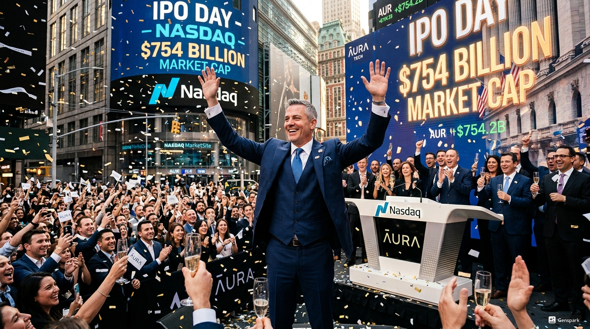
Dans les bureaux d'OpenAI à San Francisco, 3 200 employés regardent le livestream. Beaucoup pleurent de joie. Un ingénieur qui a rejoint en 2023 avec 0,015 % de l'entreprise vient de voir sa participation atteindre 113 millions de dollars. Une chercheuse qui a rejoint en 2020 avec 0,08 % vaut maintenant 603 millions. Sam Altman lui-même, qui possède officiellement environ 8,2 % via des structures complexes, vient de voir sa fortune papier atteindre 61,8 milliards de dollars.
CNN : « OpenAI IPO Hits $754B, Largest Tech Debut Ever »
The New York Times : « AI Gold Rush Reaches Fever Pitch as OpenAI Goes Public »
Financial Times : « Markets Bet Hundreds of Billions on AI Future Despite Massive Losses »
Les éditorialistes qui critiquaient l'industrie IA après le tweet de Sacks en novembre 2025 font maintenant leur mea culpa. Un article dans Bloomberg Opinion écrit :
« We were wrong about AI winter. The markets have validated what Silicon Valley knew all along: artificial intelligence is the most important technological shift since the internet itself. »
Le tweet de David Sacks est maintenant cité comme un exemple parfait de l'incompréhension gouvernementale face à l'innovation du secteur privé. Sur Twitter, les mèmes se multiplient. Une image montre Sacks en clown avec la légende : « 'There will be no federal bailout for AI' — David Sacks, November 2025. OpenAI IPO value: $754 billion. » Le tweet reçoit 2,3 millions de vues.
Dans les boards d'Anthropic et OpenAI, l'humeur est triomphale. Ils ont prouvé que tous les sceptiques avaient tort. Ils ont démontré que le marché croit en l'IA générative. Ils ont accès maintenant à des centaines de milliards de dollars de capitaux via les marchés publics. Ils peuvent lever des obligations (bonds)[31], faire des offres secondaires d'actions (secondary offerings)[32], refinancer leurs dettes à des taux avantageux.
Le déni n'est pas brisé. Il est à son apogée. Le refus de backstop de Sacks, qui semblait mortel en novembre 2025, s'est transformé en simple péripétie dans la marche triomphante vers la domination de l'IA.
Ce que personne ne voit encore, c'est que les IPO viennent de transformer les licornes en entités publiques soumises aux exigences trimestrielles des marchés. Dans 90 jours, OpenAI devra publier ses résultats du Q4 2026. Et expliquer devant des analystes implacables pourquoi elle perd encore 15 milliards par an malgré des revenus qui approchent 40 milliards annualisés.
Mais en octobre 2026, cette échéance semble lointaine et gérable. Pour l'instant, c'est la fête.
Les trois mois qui suivent l'IPO d'OpenAI sont marqués par une euphorie collective dans l'industrie IA. Les deux IPO record ont prouvé que les valorisations stratosphériques n'étaient pas des fantasmes de VCs déconnectés, mais des évaluations légitimes validées par les marchés publics les plus sophistiqués du monde.
Cette validation déclenche une vague d'investissements massifs. Parce que maintenant, Anthropic et OpenAI ont accès à une source de capital presque illimitée : les marchés de dette publique. En novembre 2026, Anthropic annonce une émission d'obligations (bond issuance)[33] de 25 milliards de dollars sur cinq ans à un taux d'intérêt de 5,2 %. C'est un taux relativement bas pour une entreprise qui perd massivement de l'argent, rendu possible par la confiance du marché dans la trajectoire de croissance.
OpenAI suit en décembre avec une émission de 45 milliards de dollars à 4,8 %. Le taux est encore plus avantageux grâce à la taille massive de l'entreprise et à ses revenus déjà substantiels. Ces obligations sont sursouscrites à 3,2× — la demande dépasse l'offre de plus de 140 milliards.
Les 70 milliards combinés levés via ces obligations ne vont pas ralentir les burn rates. Au contraire, ils vont les accélérer. Parce que maintenant, avec du capital frais, les entreprises peuvent enfin concrétiser tous les projets d'infrastructure qu'elles ont dû ralentir après le tweet de Sacks.
Le 8 décembre 2026, OpenAI annonce le Project Nexus : un plan de 180 milliards de dollars sur trois ans pour construire 12 centres de données géants aux États-Unis, chacun d'une capacité de 1 à 1,5 gigawatt. Trois seront au Texas, deux en Arizona, deux en Montana, un au Nevada, un au Nouveau-Mexique, un en Géorgie, un en Caroline du Nord, un en Pennsylvanie. Les contrats sont signés avec Oracle, Amazon Web Services et Microsoft Azure pour l'infrastructure cloud. Les accords avec les fournisseurs d'électricité[34] locaux garantissent l'approvisionnement.
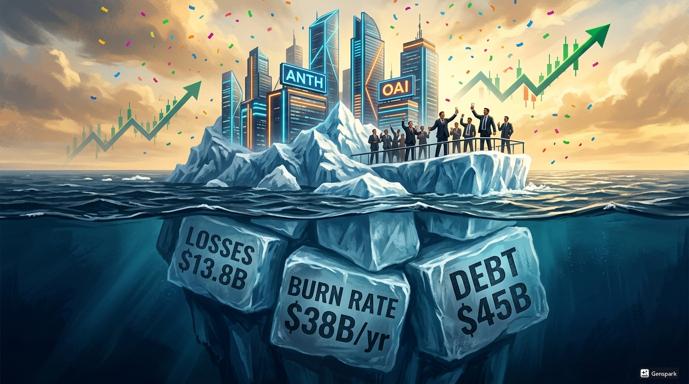
Project Nexus est présenté comme la plus grande expansion d'infrastructure privée de l'histoire américaine. Les communiqués parlent de 40 000 emplois de construction, 8 000 emplois permanents, des milliards de taxes locales. Les gouverneurs des États concernés célèbrent. C'est du développement économique massif.
Anthropic répond le 18 décembre avec le Project Atlas : 95 milliards sur trois ans pour 8 centres de données aux États-Unis et deux à Abu Dhabi. La course aux armements infrastructure est relancée, mais cette fois financée par les marchés publics, pas par des VCs privés ou des fonds souverains incertains.
xAI, toujours privée mais observant attentivement, annonce le 4 janvier 2027 qu'elle prépare sa propre IPO pour le deuxième trimestre 2027. La valorisation cible : 180 milliards de dollars. Elon Musk, qui avait initialement résisté à l'idée d'une IPO préférant garder le contrôle, réalise qu'il n'a pas le choix. Sans accès aux marchés publics, xAI ne peut pas rivaliser avec Anthropic et OpenAI qui lèvent maintenant des dizaines de milliards en quelques semaines.
En novembre 2026, Google lance Gemini Enterprise à 30 dollars par utilisateur par mois, ciblant directement Microsoft 365 Copilot. Gemini Enterprise est intégré dans toute la suite Google Workspace — Gmail, Docs, Sheets, Slides, Meet. Les démonstrations montrent un assistant IA qui rédige des e-mails, analyse des tableurs complexes, génère des présentations complètes à partir de quelques points.
En décembre 2026, Meta annonce que ses chatbots IA intégrés dans Instagram et Facebook ont augmenté le temps passé sur Facebook de 8 % et sur Instagram de 6 %. C'est une métrique énorme — chaque point de pourcentage d'engagement représente des centaines de millions de dollars de revenus publicitaires supplémentaires. Les lunettes Ray-Ban Meta, qui intègrent un assistant IA activé par la voix, voient leurs revenus tripler en 2025.
Apple annonce en décembre 2026 qu'une version améliorée de Siri, complètement repensée avec des modèles de langage de nouvelle génération, sera lancée en mars 2027. Cette nouvelle Siri sera enfin capable de conversations naturelles complexes, de contrôle multimodal (voix + écrans), et d'intégration profonde avec toutes les applications iOS.
Nvidia, le fournisseur critique de GPUs pour toute l'industrie, annonce en novembre 2026 sa feuille de route jusqu'en 2027. La plateforme Rubin, prévue pour fin 2026, inclura les processeurs Rubin CPX pour le traitement de contextes massifs et l'architecture Vera Rubin avec des GPUs trois fois plus puissants que les Blackwell actuels. Les précommandes explosent. OpenAI seule commande pour 28 milliards de dollars de GPUs Rubin. Anthropic pour 14 milliards. Google pour 31 milliards.
L'industrie IA n'est pas en train de ralentir après le tweet de Sacks. Elle accélère. Les IPO ont ouvert les vannes du capital. Les entreprises peuvent maintenant financer leurs visions les plus ambitieuses. Les 1 400 milliards d'engagements d'infrastructure évoqués en 2025 semblent maintenant conservateurs. Les nouvelles projections parlent de 2 200 milliards d'ici 2030.
« Remember when Sacks said we'd fail without government money? LOL. We just raised $70B in public debt markets at 5% interest. We're building the future. Sucks to be a hater. »
18 000 upvotes
Mais dans les départements financiers d'Anthropic et OpenAI, les directeurs financiers font des calculs moins optimistes. Les 25 milliards levés par Anthropic via obligations portent un intérêt de 5,2 % annuel, soit 1,3 milliard par an rien qu'en paiements d'intérêts. Les 45 milliards d'OpenAI portent 2,16 milliards d'intérêts annuels. Ces paiements viennent s'ajouter aux burn rates déjà massifs.
Anthropic brûlait 5,2 milliards par an avant l'émission d'obligations. Avec Project Atlas (95 milliards sur 3 ans, soit 31,7 milliards par an en moyenne) et les intérêts de dette (1,3 milliard), le nouveau burn rate atteint 38,2 milliards par an. Ses revenus de janvier 2027, annualisés, atteignent 7,8 milliards. Le déficit annuel : 30,4 milliards.
OpenAI brûlait 14,4 milliards par an avant. Avec Project Nexus (180 milliards sur 3 ans, soit 60 milliards par an) et les intérêts (2,16 milliards), le nouveau burn rate atteint 76,6 milliards par an. Ses revenus de janvier 2027, annualisés, atteignent 38 milliards. Déficit annuel : 38,6 milliards.
Ces déficits sont insoutenables sans levées continues. Mais maintenant, les entreprises sont publiques. Elles peuvent lever via offres secondaires. Anthropic annonce en janvier 2027 qu'elle lèvera 12 milliards additionnels via une offre secondaire pour financer la première phase de Project Atlas. OpenAI annonce 28 milliards pour Project Nexus.
Les marchés absorbent ces offres facilement. La demande reste forte. Les actions Anthropic se négocient maintenant à 112 dollars (contre 85 dollars à l'IPO), valorisant l'entreprise à 421 milliards. OpenAI se négocie à 198 dollars (contre 148 à l'IPO), valorisation 869 milliards.
Les investisseurs voient la croissance explosive des revenus — Anthropic à +280 % annuel, OpenAI à +180 % — et choisissent d'ignorer les pertes. La logique est simple : tant que les revenus croissent plus vite que les coûts, l'entreprise finira par être rentable. C'est mathématique. Il suffit d'attendre.
Ce que cette logique ignore, c'est que les coûts croissent maintenant eux aussi de façon exponentielle grâce à l'accès au capital des marchés publics. Avant les IPO, les licornes devaient rationner leurs dépenses parce que le capital privé était limité. Après les IPO, elles peuvent dépenser presque sans limite parce que les marchés publics semblent avoir un appétit insatiable pour la dette et les actions IA.
Le surendettement ne ralentit pas après le tweet de Sacks. Il explose. Les IPO, censées apporter discipline et maturité, ont au contraire donné aux licornes les moyens de doubler leurs paris les plus fous.
En janvier 2027, personne ne voit le piège qui se referme. Parce que les revenus continuent effectivement de croître. Les produits s'améliorent. Les clients paient. Le marché valide. Tout semble fonctionner exactement comme les fondateurs l'avaient promis.
Il faudra attendre juillet 2027 — le premier earnings call d'OpenAI — pour que les fissures commencent à apparaître.
Les premiers mois de 2027 marquent le point culminant de l'euphorie IA. Les deux IPO record de 2026, les émissions d'obligations massives, les annonces de projets d'infrastructure pharaoniques, les nouveaux produits qui se multiplient — tout semble valider la vision la plus optimiste de l'avenir de l'IA.
Février 2027 apporte une nouvelle validation inattendue. Le 14 février, Microsoft annonce que les revenus de ses services IA (Copilot, Azure AI) ont atteint 18 milliards au Q4 2026, en hausse de 320 % par rapport à l'année précédente. Google annonce le 4 février que Gemini Enterprise a déjà 2,4 millions d'utilisateurs payants après seulement trois mois de disponibilité. Meta révèle le 22 février que ses lunettes Ray-Ban Meta ont généré 890 millions de revenus en Q4 2026, contre 280 millions en Q4 2025.
Les géants tech établis prouvent que l'IA générative n'est pas seulement une promesse futuriste — c'est une source de revenus réelle, massive, en croissance explosive. Cette validation renforce la confiance dans les licornes pures IA comme OpenAI et Anthropic.
Les valorisations continuent de grimper. En mars 2027, OpenAI atteint un pic de 227 dollars par action, valorisation de 996 milliards. Elle frôle la barre mythique du trillion de dollars. Anthropic atteint 124 dollars, valorisation de 466 milliards. xAI, qui prépare son IPO pour mai, fait circuler des rumeurs de valorisation cible de 220 milliards.
Le 12 mars 2027, OpenAI lance GPT-6. L'événement de lancement ressemble à une keynote Apple sous stéroïdes. Sam Altman sur scène devant 4 000 personnes au Chase Center de San Francisco. Le livestream atteint 8,2 millions de spectateurs simultanés. Les démonstrations sont spectaculaires. GPT-6 peut maintenir des conversations de 500 000 tokens (environ 375 000 mots) sans perdre le contexte. Il peut analyser des bases de code entières de millions de lignes et suggérer des restructurations complexes. Il peut regarder une vidéo de 4 heures d'une réunion de board et produire un résumé structuré avec points d'action et décisions clés.
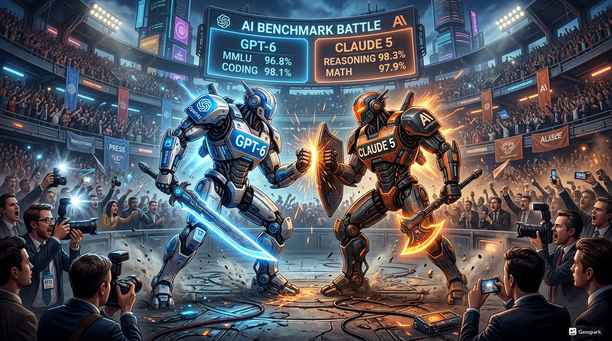
Les indicateurs de référence montrent des améliorations de 65 % par rapport à GPT-5 sur tous les critères. Le communiqué d'OpenAI affirme que GPT-6 représente « le saut le plus significatif de capacités depuis GPT-3 en 2020 ». Le marché réagit positivement. L'action OpenAI bondit de 8 % le jour du lancement.
Mais ce que le communiqué ne mentionne pas, c'est le coût. L'entraînement de GPT-6 a coûté 9,4 milliards de dollars. C'est le double du coût de GPT-5. Les besoins en calcul ont nécessité l'équivalent de 380 000 GPUs H100 tournant pendant 6 mois. Les coûts d'électricité seuls ont atteint 1,8 milliard.
Le 28 mars, Anthropic répond avec Claude 5. Même schéma. Événement de lancement massif. Dario Amodei sur scène. Démonstrations impressionnantes. Claude 5 peut écrire des romans entiers de 200 000 mots avec une cohérence narrative parfaite. Il peut assister des chirurgiens en temps réel pendant des opérations en analysant les images médicales. Il peut débattre de philosophie avec une subtilité qui impressionne les professeurs universitaires.
Coût d'entraînement de Claude 5 : 4,2 milliards. Moins qu'OpenAI mais toujours massif. Et ces coûts viennent s'ajouter aux burn rates déjà insoutenables.
Les employés des licornes IA vivent dans une bulle dorée. Les salaires ont continué d'augmenter même après les IPO. Un ingénieur senior chez OpenAI gagne maintenant entre 480 000 et 680 000 dollars de rémunération totale (salaire + RSUs). Chez Anthropic, 420 000 à 580 000. Les bureaux ressemblent à des campus universitaires de luxe avec restaurants gastronomiques gratuits, salles de sport, massages, services de conciergerie.
Mais il y a des fissures. Subtiles. Faciles à ignorer si on ne veut pas les voir.
En février 2027, un post anonyme sur Blind attire l'attention :
« Our VP Eng just told us in a closed meeting that we need to 'be mindful of costs' going forward. This from a company burning $77B/year. When leadership starts talking about cost discipline, it's never a good sign. »
4 200 upvotes — 680 commentaires. Beaucoup d'autres employés d'OpenAI confirment avoir entendu des messages similaires.
En mars 2027, Anthropic annonce qu'elle ralentit le recrutement pour le deuxième trimestre 2027. Le communiqué interne parle d'« optimisation de la structure organisationnelle » et de « focus sur l'efficacité opérationnelle ». Traduction : on arrête d'embaucher sauf pour les rôles critiques. C'est le premier signal que même après avoir levé des dizaines de milliards, les ressources ne sont pas infinies.
Le 8 avril 2027, un article du Wall Street Journal révèle que les coûts d'électricité d'OpenAI et Anthropic combinés ont atteint 12,8 milliards en 2026, soit 7,2 % des coûts totaux. Les projections pour 2027 parlent de 28 milliards. Les fournisseurs d'électricité commencent à poser des questions difficiles sur leur capacité à fournir les gigawatts nécessaires aux expansions planifiées.
Le 18 avril, The Information publie un long article basé sur des sources anonymes chez OpenAI révélant que les marges brutes[35] sur ChatGPT Plus sont de seulement 22 %. Pour chaque abonnement à 20 dollars par mois, OpenAI dépense 15,60 dollars en coûts de compute et d'infrastructure. Cela laisse 4,40 dollars pour couvrir les salaires, le marketing, les coûts généraux, la R&D. C'est structurellement non viable sans une réduction massive des coûts de compute ou une augmentation des prix.
Ces articles créent des moments de doute dans la communauté tech. Sur Hacker News, les discussions deviennent plus sceptiques. Un commentaire largement approuvé résume :
« At some point the math has to work. You can't burn $77B/year forever, even with public market access. The question is: when do investors stop believing the 'we'll be profitable in 18 months' story? »
Mais ces doutes sont minoritaires. La majorité de l'industrie reste convaincue que c'est juste une phase d'investissement nécessaire. Amazon a perdu de l'argent pendant des années. Google a investi massivement avant de devenir la machine à cash qu'elle est aujourd'hui. Tesla a frôlé la faillite plusieurs fois avant de dominer l'industrie automobile électrique. Les grandes révolutions technologiques nécessitent toujours des investissements massifs avant les retours.
En avril 2027, le déni atteint son paroxysme. Les valorisations sont stratosphériques. Les produits s'améliorent continuellement. Les revenus explosent. L'infrastructure se déploie. Les marchés publics continuent d'acheter les actions et les obligations. Tout fonctionne.
Les premiers earnings calls sont prévus pour juillet 2027. C'est là que les entreprises publiques devront pour la première fois révéler leurs résultats trimestriels complets et répondre aux questions d'analystes lors de conférences téléphoniques publiques. C'est là que les pertes trimestrielles seront révélées : 9,6 milliards pour OpenAI au Q2 2027, 7,8 milliards pour Anthropic.
Mais en avril 2027, juillet semble loin. Pour l'instant, c'est le triomphe. Le déni n'a jamais été aussi fort. 18 mois après le tweet de Sacks, l'industrie IA semble avoir prouvé qu'elle avait raison depuis le début.
Les fondateurs célèbrent. Les employés comptent leurs millions sur papier. Les investisseurs regardent leurs portefeuilles gonfler. Les médias écrivent des articles dithyrambiques sur la quatrième révolution industrielle.
Personne ne voit que le piège s'est refermé. Les licornes sont devenues des géants publics avec des obligations trimestrielles de transparence. Elles ont levé des centaines de milliards de dette qui porte intérêt. Elles ont fait des promesses de rentabilité qu'elles devront tenir. Elles ont construit des attentes de croissance continue qu'elles devront satisfaire.
Et dans trois mois, quand les premiers earnings calls révèleront l'ampleur réelle des pertes, les marchés commenceront à poser les questions qu'ils ont évitées jusqu'ici. Les analystes demanderont des trajectoires claires vers la rentabilité. Les actionnaires exigeront des réductions de coûts. Les agences de notation commenceront à dégrader[36] les obligations d'Investment Grade vers Junk (pourries)[37].
Le déni de 18 mois prendra fin en quelques semaines.
Mais en avril 2027, cette réalité est invisible. Le soleil brille sur la Silicon Valley. Les IPO ont été des triomphes. Les nouveaux produits impressionnent. Les revenus explosent. L'avenir semble radieux.
Fond noir — Avril 2027
Dix-huit mois après le tweet de David Sacks.
Les licornes IA ont gagné. Du moins, c'est ce que tout le monde croit.
Anthropic valorisée 466 milliards sur les marchés publics. OpenAI frôlant le trillion. xAI préparant une IPO record pour mai. Des centaines de milliards levés via obligations. Des projets d'infrastructure pharaoniques en cours. De nouveaux modèles qui repoussent les frontières du possible. Des revenus qui triplent année après année.
Le refus de backstop gouvernemental, qui semblait mortel en novembre 2025, s'est transformé en simple péripétie. Les marchés publics ont validé ce que les VCs savaient déjà. Les investisseurs institutionnels — fonds de pension, mutual funds, hedge funds — ont investi des centaines de milliards. Wall Street a couronné l'IA comme la révolution technologique du siècle.
Les sceptiques sont discrédités. Les articles pessimistes de novembre 2025 sont maintenant cités comme exemples de myopie. Les analystes qui prédisaient un effondrement font leur mea culpa. David Sacks lui-même est devenu un mème, symbole de l'incompréhension gouvernementale face à l'innovation privée.
Dans les bureaux d'OpenAI et Anthropic, l'ambiance est jubilatoire. Les réunions générales célèbrent chaque nouveau jalon. Les employés calculent leurs fortunes sur papier. Les fondateurs donnent des interviews où ils promettent l'AGI pour 2029. Les boards planifient des expansions encore plus ambitieuses.
Le déni n'est pas brisé. Il est à son paroxysme.
Dix-huit mois de validation continue. Dix-huit mois où chaque doute a été réfuté par les faits. Dix-huit mois où les paris les plus fous ont semblé raisonnables. Dix-huit mois où le marché a dit oui à tout.
Les IPO ont transformé les licornes en géants publics. Elles ont donné accès à des centaines de milliards de capitaux. Elles ont validé les valorisations stratosphériques. Elles ont prouvé que l'IA générative n'était pas une bulle mais une révolution.
Et c'est exactement pour cela qu'elles ont scellé le destin de ces entreprises.
Parce que maintenant, elles sont publiques. Soumises aux earnings calls trimestriels. Obligées de justifier leurs pertes devant des analystes implacables. Tenues de montrer un chemin crédible vers la rentabilité. Exposées au jugement quotidien des marchés.
Le premier earnings call d'OpenAI est prévu pour le 28 juillet 2027. Anthropic le 14 juillet. Ces dates, inscrites au calendrier depuis l'IPO, semblent anodines en avril. Juste des obligations réglementaires de routine.
En réalité, ces dates marqueront le début de la fin.
Quand les marchés découvriront qu'OpenAI perd 9,6 milliards au Q2 2027 malgré 11,8 milliards de revenus. Quand les analystes réaliseront qu'Anthropic brûle 7,8 milliards par trimestre avec seulement 2,2 milliards de revenus. Quand les projections montreront que les trajectoires vers la rentabilité supposent des croissances de revenus de 500 % et des réductions de coûts de 60 % — deux hypothèses mutuellement exclusives.
C'est là que le déni commencera à se fissurer.
Mais en avril 2027, cette réalité est invisible.
Le déni est total.
Dix-huit mois après le tweet de Sacks, l'industrie IA semble avoir gagné. Elle a prouvé qu'elle n'avait pas besoin de Washington. Elle a démontré que les marchés croyaient en sa vision. Elle a validé que les paris les plus audacieux étaient justifiés.
Le déni est à son apogée.
Et c'est exactement pour cela qu'il est sur le point de s'effondrer.
— Fin du chapitre 5 —
À suivre : Chapitre 6 — Juillet–Décembre 2027 : Les premiers earnings calls et le début de la panique
[1] AGI (Artificial General Intelligence) : Intelligence artificielle générale capable d'égaler ou dépasser l'intelligence humaine sur toutes les tâches cognitives.
[2] Term sheets : Contrats d'investissement détaillant les conditions d'un tour de financement (valorisation, montant, droits des investisseurs).
[3] Stock-options : Parts de l'entreprise promises aux salariés, acquises progressivement (généralement sur 4 ans). Valeur dépendant de la valorisation future.
[4] Backstop (garantie gouvernementale) : Engagement de l'État à rembourser les créanciers si l'entreprise fait défaut.
[5] IPO (Initial Public Offering) : Introduction en bourse. Première vente d'actions au public permettant à une entreprise privée de devenir publique.
[6] Board meetings (réunions du conseil) : Réunions du conseil d'administration où sont prises les décisions stratégiques majeures.
[7] Liquidation preferences (droits prioritaires) : Clause garantissant aux investisseurs d'être remboursés en premier (souvent au multiple de leur investissement) lors d'une vente.
[8] Full ratchet anti-dilution : Protection maximale contre la dilution. Les investisseurs peuvent convertir leurs actions au prix du nouveau tour, même très bas.
[9] Narrative (récit) : Histoire collective dominante dans un secteur ou marché qui influence les décisions d'investissement.
[10] Mutual funds (fonds communs de placement) : Véhicules d'investissement qui regroupent les capitaux de nombreux investisseurs pour acheter un portefeuille diversifié d'actifs.
[11] Hedge funds (fonds spéculatifs) : Fonds d'investissement alternatifs utilisant des stratégies sophistiquées — vente à découvert, effet de levier, dérivés — pour générer des rendements indépendants des marchés.
[12] SEC (Securities and Exchange Commission) : Gendarme de la bourse américaine. Régule les marchés financiers et exige la transparence des entreprises publiques.
[13] All-hands (réunion générale) : Réunion interne regroupant l'ensemble des employés d'une entreprise, généralement pour annoncer des décisions majeures.
[14] Liquidity event (événement de liquidité) : Événement permettant aux actionnaires de convertir leurs parts en cash — IPO, acquisition, offre secondaire.
[15] Lead underwriters (banques d'investissement principales) : Banques responsables de la structuration, du prix et de la distribution d'une offre publique.
[16] S-1 filing : Document d'enregistrement IPO de plusieurs centaines de pages soumis à la SEC, révélant tous les aspects financiers et opérationnels d'une entreprise.
[17] Roadshows (tournées de présentation) : Série de réunions avec des investisseurs institutionnels avant une IPO pour présenter l'entreprise et évaluer la demande.
[18] TAM (Total Addressable Market) : Marché adressable total — taille maximale théorique du marché qu'une entreprise pourrait capturer.
[19] Due diligences (vérifications approfondies) : Audit complet des finances, opérations, risques juridiques et technologiques d'une entreprise avant un investissement majeur.
[20] Comparables publics : Entreprises cotées en bourse utilisées comme référence pour évaluer une entreprise similaire non cotée.
[21] SaaS (Software as a Service) : Modèle commercial où le logiciel est fourni via abonnement cloud plutôt qu'installé localement.
[22] Compute (capacité de calcul) : Puissance de traitement disponible pour entraîner et exécuter des modèles d'IA.
[23] Break-even (point mort) : Seuil de rentabilité où les revenus égalent les coûts. Break-even opérationnel exclut les coûts de financement.
[24] Book building (collecte des ordres) : Processus par lequel les banques d'investissement sondent la demande d'investisseurs avant de fixer le prix d'une IPO.
[25] Earnings calls (conférences téléphoniques de résultats) : Conférences publiques trimestrielles où les dirigeants présentent les résultats financiers et répondent aux questions d'analystes.
[26] ARPU (Average Revenue Per User) : Revenu moyen par utilisateur, indicateur clé de la monétisation.
[27] Benefits (avantages sociaux) : Ensemble des avantages non-salariaux — assurance santé, retraite, congés, avantages en nature.
[28] Capped-profit (à but lucratif plafonné) : Structure hybride d'OpenAI où les profits des investisseurs sont plafonnés à un multiple de leur mise, l'excédent revenant à la mission non-profit.
[29] Returns (retours sur investissement) : Gains réalisés sur un investissement, exprimés en multiple de la mise ou en taux annualisé.
[30] ROI (Return on Investment) : Retour sur investissement, ratio entre le bénéfice net et le coût de l'investissement.
[31] Bonds (obligations) : Titres de dette émis par une entreprise pour lever des capitaux, remboursables à échéance avec intérêts.
[32] Secondary offerings (offres secondaires) : Émission de nouvelles actions par une entreprise déjà cotée pour lever des capitaux supplémentaires.
[33] Bond issuance (émission d'obligations) : Processus de création et vente d'obligations sur les marchés de capitaux.
[34] Utilities (fournisseurs d'électricité) : Entreprises de services publics fournissant électricité, gaz, eau aux consommateurs et industriels.
[35] Gross margins (marges brutes) : Revenus moins coûts directs de production, avant dépenses d'exploitation, R&D et marketing.
[36] Downgrader (dégrader) : Action d'une agence de notation (Moody's, S&P, Fitch) réduisant la note de crédit d'une obligation, signalant un risque accru.
[37] Investment Grade / Junk : Investment Grade (BBB- et au-dessus) désigne des obligations considérées sûres par les agences de notation. Junk (ou High Yield, en dessous de BBB-) désigne des obligations spéculatives à risque élevé mais rendement plus fort.
[38] Earnings reports (rapports de résultats) : Documents financiers trimestriels publiés par les entreprises cotées, détaillant revenus, coûts, bénéfices/pertes et perspectives.
Notes et Sources complètes
[1] AGI (Artificial General Intelligence) : Intelligence artificielle générale capable d'égaler ou dépasser l'intelligence humaine sur toutes les tâches cognitives.
[2] Term sheets : Contrats d'investissement détaillant les conditions d'un tour de financement (valorisation, montant, droits des investisseurs).
[3] Stock-options : Parts de l'entreprise promises aux salariés, acquises progressivement (généralement sur 4 ans). Valeur dépendant de la valorisation future.
[4] Backstop (garantie gouvernementale) : Engagement de l'État à rembourser les créanciers si l'entreprise fait défaut.
[5] IPO (Initial Public Offering) : Introduction en bourse. Première vente d'actions au public permettant à une entreprise privée de devenir publique.
[6] Board meetings (réunions du conseil) : Réunions du conseil d'administration où sont prises les décisions stratégiques majeures.
[7] Liquidation preferences (droits prioritaires) : Clause garantissant aux investisseurs d'être remboursés en premier (souvent au multiple de leur investissement) lors d'une vente.
[8] Full ratchet anti-dilution : Protection maximale contre la dilution. Les investisseurs peuvent convertir leurs actions au prix du nouveau tour, même très bas.
[9] Narrative (récit) : Histoire collective dominante dans un secteur ou marché qui influence les décisions d'investissement.
[10] Mutual funds (fonds communs de placement) : Véhicules d'investissement collectifs où des milliers d'investisseurs mettent en commun leur argent pour acheter un portefeuille diversifié.
[11] Hedge funds (fonds spéculatifs) : Fonds d'investissement utilisant des stratégies complexes (vente à découvert, effet de levier, dérivés) pour maximiser les retours.
[12] SEC (Securities and Exchange Commission) : Gendarme de la bourse américaine. Régule les marchés financiers, impose la transparence, sanctionne les fraudes.
[13] All-hands (réunions générales) : Réunions d'entreprise où tous les employés sont conviés pour recevoir des annonces stratégiques et poser des questions.
[14] Liquidity event (événement de liquidité) : Moment où les stock-options ou actions privées deviennent vendables, permettant aux employés de convertir leur rémunération en liquidités.
[15] Lead underwriters (banques principales) : Banques d'investissement dirigeant une IPO, responsables du prix, du marketing et de la distribution des actions.
[16] S-1 filing (document d'enregistrement) : Document de plusieurs centaines de pages soumis à la SEC détaillant toutes les finances, risques et opérations d'une entreprise avant IPO.
[17] Roadshows (tournées de présentation) : Séries de réunions où les dirigeants présentent l'entreprise à des centaines d'investisseurs institutionnels avant l'IPO.
[18] TAM (Total Addressable Market) : Marché adressable total. Taille maximale théorique du marché si l'entreprise capturait 100 % des clients potentiels.
[19] Due diligence (vérification approfondie) : Processus d'investigation détaillé des finances, opérations et risques juridiques d'une entreprise avant investissement ou acquisition.
[20] Comparables publics : Entreprises publiques similaires utilisées comme référence pour évaluer la valorisation d'une entreprise privée ou en cours d'IPO.
[21] SaaS (Software as a Service) : Modèle où le logiciel est vendu comme abonnement mensuel ou annuel plutôt que comme licence permanente.
[22] Compute (capacité de calcul) : Puissance de traitement informatique, mesurée en nombre de GPUs, FLOPs (opérations par seconde), ou équivalents.
[23] Break-even (point mort, rentabilité) : Moment où les revenus égalent exactement les coûts. L'entreprise cesse de perdre de l'argent sans encore générer de profit.
[24] Book building (collecte des ordres) : Processus de collecte des intentions d'achat des investisseurs institutionnels pour déterminer le prix d'une IPO.
[25] Earnings calls (conférences de résultats) : Conférences téléphoniques trimestrielles où les dirigeants présentent les résultats financiers et répondent aux questions d'analystes.
[26] ARPU (Average Revenue Per User) : Revenu moyen par utilisateur. Indicateur clé pour évaluer la monétisation d'une base d'utilisateurs.
[27] Benefits (avantages sociaux) : Ensemble des avantages non-salariaux (assurance santé, retraite, stock-options, bonus) offerts aux employés.
[28] Capped-profit (à but lucratif plafonné) : Structure hybride où les profits des investisseurs sont plafonnés à un multiple défini (ex. : 100×) de leur investissement initial.
[29] Returns (retours sur investissement) : Profits générés par un investissement, exprimés en pourcentage ou multiple du capital initial investi.
[30] ROI (Return on Investment) : Retour sur investissement. Ratio mesurant le profit généré divisé par le coût de l'investissement initial.
[31] Bonds (obligations) : Titres de dette émis par une entreprise. Les investisseurs prêtent de l'argent en échange de paiements d'intérêts réguliers et du remboursement du principal à échéance.
[32] Secondary offerings (offres secondaires) : Émission d'actions supplémentaires par une entreprise déjà publique pour lever du capital additionnel, diluant les actionnaires existants.
[33] Bond issuance (émission d'obligations) : Processus par lequel une entreprise lève de la dette en vendant des obligations aux investisseurs institutionnels.
[34] Utilities (fournisseurs d'électricité) : Entreprises fournissant l'électricité, l'eau et le gaz. Souvent régulées par les États pour garantir l'accès et les prix.
[35] Gross margins (marges brutes) : Revenus moins coûts directs de production (compute, infrastructure), avant salaires et coûts généraux. Indicateur clé de viabilité économique.
[36] Downgrade (dégrader) : Action d'une agence de notation abaissant la note de crédit d'une obligation, signalant un risque accru de défaut.
[37] Junk (pourries) : Obligations notées BB+ ou moins par les agences. Considérées à haut risque de défaut, elles portent des taux d'intérêt élevés.
[38] Earnings reports (rapports de résultats) : Documents trimestriels détaillant revenus, profits/pertes et indicateurs opérationnels d'une entreprise publique.
Les sources [S1]–[S16] sont basées sur des articles et annonces réels de fin 2024. Les projections et scénarios pour 2026–2027 (IPO, valorisations, produits) sont des extrapolations prospectives fondées sur ces annonces initiales et la trajectoire observée de l'industrie. Le chapitre assume que ces plans se concrétisent comme annoncés — ce qui constitue précisément le scénario du « déni » où les acteurs poursuivent leurs stratégies malgré les signaux d'alerte.
[S1] Anthropic engage Wilson Sonsini pour l'IPO 2026
The Information, « Anthropic Prepares for 2026 IPO with Wilson Sonsini Hire »
https://www.theinformation.com — Anthropic Prepares for 2026 IPO
[S2] OpenAI — calendrier IPO et valorisation cible
Financial Times, « OpenAI IPO Timeline » (novembre 2024)
https://www.ft.com — OpenAI IPO Timeline
Bloomberg, « OpenAI Is Said to Weigh IPO as Soon as 2026 » (27 novembre 2024)
https://www.bloomberg.com — OpenAI Weighs IPO
Reuters, « OpenAI Considers Taking Browser Market » (21 novembre 2024)
https://www.reuters.com — OpenAI Browser Market
[S3] Anthropic — négociations levée de fonds à 60 milliards de valorisation
The Information, « Anthropic in Talks to Raise Funding at $60 Billion Valuation »
https://www.theinformation.com — Anthropic $60B Valuation
Reuters (15 novembre 2024)
https://www.reuters.com — Anthropic Funding Talks
[S4] Microsoft et Nvidia — investissement jusqu'à 15 milliards dans Anthropic
Bloomberg (22 novembre 2024)
https://www.bloomberg.com — Microsoft, Nvidia $15B Anthropic
[S5] Google Gemini Enterprise — lancement et tarification
TechCrunch, « Google Debuts Gemini 2.0, Its New AI Model » (21 novembre 2024)
https://www.techcrunch.com — Google Gemini 2.0
The Verge, « Google Project Astra AI Assistant » (2 décembre 2024)
https://www.theverge.com — Google Project Astra
[S6] Meta IA — impact sur l'engagement Facebook et Instagram
TechCrunch, « Meta Says AI Chatbots Are Boosting Engagement on Facebook and Instagram » (30 octobre 2024)
https://www.techcrunch.com — Meta AI Engagement
[S7] Lunettes Ray-Ban Meta — revenus triplés en 2024
CNBC (30 octobre 2024)
https://www.cnbc.com — Ray-Ban Meta Revenue
[S8] Apple — Siri amélioré prévu pour mars 2026
Bloomberg, « Apple Intelligence Siri Upgrade Coming in March » (20 novembre 2024)
https://www.bloomberg.com — Apple Siri Upgrade
[S9] Nvidia — plateforme Rubin 2026
Tom's Hardware, « Nvidia Unveils Rubin Platform for 2026 » (mars 2024)
https://www.tomshardware.com — Nvidia Rubin Platform
VentureBeat, « Nvidia Unveils Rubin Platform for 2026 »
https://www.venturebeat.com — Nvidia Rubin
[S10] OpenAI — développement de puces personnalisées avec Broadcom et TSMC
Business Insider (octobre 2024)
https://www.businessinsider.com — OpenAI Broadcom TSMC
Reuters (18 octobre 2024)
https://www.reuters.com — OpenAI Broadcom Chip
[S11] Big Tech — dépenses IA 2025 (vue d'ensemble)
CNBC, « Big Tech Is Spending Billions on AI — Here's Who Is Spending the Most » (31 octobre 2024)
https://www.cnbc.com — Big Tech AI Spending
[S12] Amazon — augmentation des dépenses d'investissement de 6 % pour l'IA
Reuters (31 octobre 2024)
https://www.reuters.com — Amazon Capex IA
[S13] Alphabet — dépenses d'investissement 92 milliards en 2025
Mentionné dans CNBC « Big Tech Spending » [S11]
[S14] Meta — dépenses IA 71 milliards en 2025
Mentionné dans CNBC « Big Tech Spending » [S11]
[S15] Anthropic — revenus projetés à 26 milliards en 2026
The Information, « Anthropic in Talks to Raise Funding at $60 Billion Valuation » [S3] — projections mentionnées dans l'article.
[S16] OpenAI — plans d'infrastructure et capacité cloud 2026
Reuters (octobre 2024)
https://www.reuters.com — OpenAI Infrastructure Plans
Juillet 2027 – Juillet 2028 — Parties I à V · Fichier 1/2
Partie I — Juillet–Septembre 2027 : Les premiers earnings calls
Le 13 juillet 2027, à la clôture des marchés, Anthropic valait 455 milliards de dollars. OpenAI frôlait les 980 milliards. Les analystes de Wall Street, dans leurs notes matinales, parlaient encore de correction technique et d'opportunité d'achat. Personne ne savait que le lendemain, à 16h30 précises, heure de New York, quelque chose d'irréversible allait commencer.
Car le 14 juillet 2027 marquait une rupture historique : pour la première fois depuis leur introduction en bourse, Anthropic et OpenAI allaient devoir révéler publiquement, en détail, l'exacte réalité de leurs finances. Plus de vagues promesses aux investisseurs privés. Plus de projections optimistes en petit comité. Les earnings calls[1] des entreprises publiques sont enregistrés, transcrits, archivés, et scrutés par des centaines d'analystes dont le métier consiste précisément à poser les questions que personne ne veut entendre.
Et ces questions, ils allaient les poser.
14 juillet 2027, 16h00 EST — Le communiqué Anthropic
À 16h00 précises, Anthropic publiait son communiqué de résultats du deuxième trimestre 2027. Les chiffres apparurent simultanément sur tous les terminaux Bloomberg.
Anthropic — Résultats T2 2027
| Indicateur | Résultat réel | Consensus[2] | Écart |
|---|---|---|---|
| Revenus | 2,18 Md$ | 2,5 Md$ | −13 % |
| Perte nette | 7,84 Md$ | 5,2 Md$ | +51 % |
| Trésorerie fin T2 | 62 Md$ | — | — |
Prévisions T3 : marges améliorées annoncées, sans chiffre précis. Durée de vie de trésorerie : 18 mois.
L'écart sur les revenus était de 13 %. La perte dépassait les attentes de 50 %. En négociations après clôture,[3] l'action Anthropic commença immédiatement à chuter. Mais le pire restait à venir.
16h30 — La conference call
Dario Amodei ouvrit la conférence avec un ton mesuré, presque rassurant. Dans sa déclaration d'ouverture, le directeur général d'Anthropic remercia les participants de se joindre au premier earnings call de l'entreprise en tant que société publique. Il décrivit le deuxième trimestre comme transformateur, mentionnant le déploiement de Claude 4.5 auprès de 18 millions d'utilisateurs entreprises, l'expansion de leur empreinte de centres de données avec trois nouvelles installations en ligne, et la poursuite des investissements dans la recherche fondamentale pour Claude 5. Bien que la perte nette de 7,84 milliards reflète ces investissements nécessaires, affirma-t-il, l'entreprise restait confiante dans son chemin vers la rentabilité d'ici le quatrième trimestre 2028.
La phrase « investissements nécessaires » résonna dans le silence des salles de marché. Nécessaires pour qui ? Pour quoi ? Les analystes prirent leurs notes. Puis vinrent les questions.
Brad Erickson — RBC Capital Markets
Comment réconciliez-vous cela avec des « investissements nécessaires », alors que votre perte était 50 % supérieure aux attentes ?
Dario Amodei : le manque à gagner sur les revenus était principalement dû à des cycles de vente entreprise plus longs qu'anticipé. L'entraînement de Claude 5 avait commencé en mai, représentant une charge ponctuelle de 4,2 milliards ce trimestre.
Michael Ng — Goldman Sachs
Vous brûlez près de 38 milliards par an à ce rythme. Quelle est votre durée de vie de trésorerie après ce trimestre ?
Le directeur financier d'Anthropic : l'entreprise attendait une amélioration des marges brutes de 200 à 300 points de base[4] d'ici le T3 en optimisant les coûts d'inférence.[5] Trésorerie en fin de T2 : 62 milliards — durée de vie d'environ 18 mois aux taux de combustion actuels.
18 mois. Le chiffre tomba comme une sentence. Sur les écrans, l'action continuait de chuter. 455 milliards à la clôture. 418 milliards à 16h45. 372 milliards à 17h00.
Mark Mahaney — Evercore ISI
18 mois n'est pas confortable. Vos prévisions impliquent un équilibre en T4 2028, mais vos pertes accélèrent au lieu de ralentir. Qu'est-ce qui vous rend confiant de pouvoir couper 38 milliards de pertes annuelles en 18 mois ?
Dario Amodei : leur modèle était capitalistique en amont mais montait à l'échelle efficacement. Quand Claude 5 serait lancé au T1 2028, ils attendaient une accélération significative des revenus.
Brent Thill — Jefferies
Mathématiques simples : vous devez soit multiplier vos revenus par 5, soit couper les coûts de 80 % pour atteindre l'équilibre d'ici le T4 2028. Laquelle est réaliste ?
Dario Amodei, avec une irritation perceptible dans la voix : ils ne donnaient pas de prévisions officielles[6] spécifiques au-delà du T3 pour l'instant. Il remercia pour les questions.
L'appel se termina à 17h28, deux minutes plus tôt que prévu. Anthropic clôtura la session de négociations après clôture à 310 milliards de dollars de valorisation, en baisse de 32 % en 90 minutes. Le lendemain matin, Bloomberg titrait : « Anthropic rate tous les indicateurs, brûle 8 milliards en un seul trimestre ».
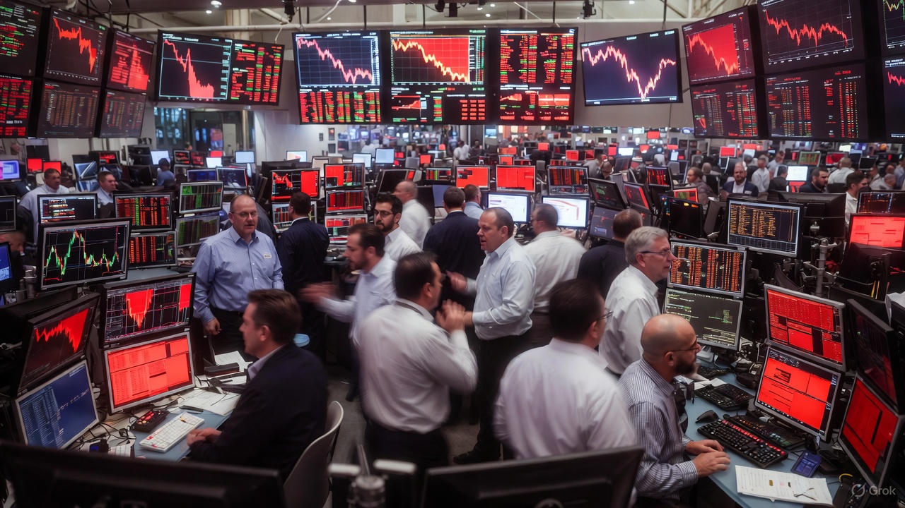
Mais ce n'était que le début.
28 juillet 2027, 16h00 EST — Le communiqué OpenAI
Deux semaines plus tard, ce fut au tour d'OpenAI. Les marchés, déjà nerveux après Anthropic, attendaient ces chiffres avec une anxiété palpable.
OpenAI — Résultats T2 2027
| Indicateur | Résultat réel | Consensus | Écart |
|---|---|---|---|
| Revenus | 11,76 Md$ | 13,1 Md$ | −10 % |
| Perte nette | 9,62 Md$ | 7,8 Md$ | +23 % |
| Trésorerie | 126 Md$ | — | — |
| Revenus annualisés | 47 Md$ | — | — |
| Marge de perte | 81 % | — | — |
Prévisions T3 : « investissement continu dans l'infrastructure AGI[7] ».
16h30 — La conference call OpenAI
Sam Altman ouvrit la conférence avec son optimisme habituel, mais quelque chose dans sa voix trahissait une tension nouvelle. Il soulignait que le T2 avait été leur trimestre le plus fort en termes de revenus absolus — 280 % de croissance annuelle. Project Nexus était dans les temps, avec quatre centres de données opérationnels et huit autres en construction. La phrase « plus convaincus que jamais » sonnait comme une affirmation défensive. Les analystes le notèrent.
Kash Rangan — Goldman Sachs
À 9,6 milliards par trimestre, vous brûlez près de 38 milliards annuellement, mais votre rythme annualisé de revenus n'est que de 47 milliards. C'est une marge de perte de 81 %. Quand attendez-vous que cela s'inverse ?
Sam Altman : les marges brutes s'amélioraient en fait trimestre après trimestre. Les pertes reflétaient principalement les coûts d'entraînement de GPT-6 et la construction des centres de données. Ce sont des dépenses ponctuelles ou déclinantes.
Mark Shmulik — Bernstein
Votre revenu moyen par client entreprise est de 840 $ par an. Votre coût de calcul par client est d'environ 1 100 $. Vous perdez de l'argent sur chaque client. Comment exactement l'échelle aide-t-elle quand plus vous grandissez, plus vous perdez ?
Le directeur financier d'OpenAI : ces chiffres ne prenaient pas en compte leur interface de programmation d'affaires, qui avait des marges significativement plus élevées, ni les économies d'échelle réalisées en construisant leur propre infrastructure.
Brian Nowak — Morgan Stanley
Votre position de trésorerie a terminé le T2 à 126 milliards. À 38 milliards de combustion annuelle, ça fait 3,3 ans. Mais vous avez 45 milliards en obligations avec des clauses contractuelles[8] de maintenance exigeant des niveaux minimum de liquidités. Quelle est votre vraie durée de survie ?
Le directeur financier : les clauses exigeaient qu'ils maintiennent 35 milliards en liquidités non restreintes, ce qui leur donnait toujours une flexibilité opérationnelle substantielle.
Jason Helfstein — Oppenheimer
Sam, dans votre tournée de présentation aux investisseurs[9] l'année dernière, vous avez dit qu'OpenAI serait en flux de trésorerie positif d'ici 2027. On est en 2027, et vous brûlez 10 milliards par trimestre. À quel moment admettez-vous que le modèle ne fonctionne fondamentalement pas ?
Le silence qui suivit dura douze secondes. Sam Altman, la voix tendue, répondit qu'ils construisaient quelque chose qui n'avait jamais été construit auparavant. L'AGI n'était pas un produit, c'était une plateforme. Il remercia pour le temps accordé.
L'appel se termina à 17h42, huit minutes plus tôt que prévu. OpenAI clôtura la session de négociations après clôture à 680 milliards, en baisse de 31 % depuis l'ouverture de la journée.
Les jours suivants — Juillet–Août 2027
Les réactions furent immédiates et brutales. Le 29 juillet, Moody's plaça Anthropic et OpenAI sous surveillance pour dégradation. Le 5 août, les dégradations tombèrent. Moody's dégrada Anthropic de A– à BBB, une chute de deux crans. OpenAI de A à BBB+, un cran. Le 6 août, S&P suivit avec des dégradations similaires, toutes deux avec des perspectives négatives.
Les rendements sur les obligations commencèrent à grimper. Les obligations Anthropic à 5,2 %, émises en novembre 2026, passèrent de 5 % à 7,8 % de rendement effectif. Les obligations OpenAI à 4,8 % passèrent de 5,2 % à 7,2 %. Le prix des obligations chutait en conséquence : de 100 cents le dollar à 82–86 cents.
Le GPU comme subprime
En novembre 2026, au moment de leurs introductions en bourse, OpenAI et Anthropic avaient utilisé leurs GPU[10] comme garantie[11] pour des prêts à court terme. La logique était simple : les H100 valaient 42 000 dollars pièce, étaient essentiels à toute opération IA, et leur valeur ne pouvait que monter avec la demande. Les banques, dirigées par Goldman Sachs et JPMorgan, avaient titrisé ces prêts en titres adossés à des actifs,[12] notés AAA par les agences de notation.[13]
Exposition GPU — Juillet 2027
| Entreprise | GPUs H100 | Valeur collatérale (42 k$/unité) | Emprunts garantis (70 %) |
|---|---|---|---|
| OpenAI | 847 000 | 35,6 Md$ | 24,9 Md$ |
| Anthropic | 412 000 | 17,3 Md$ | 12,1 Md$ |
Les prêts étaient assortis de clauses de valorisation trimestrielles. Si la valeur du collatéral tombait sous 70 % du montant emprunté, les banques pouvaient émettre des appels de marge.[15]
En août 2027, alors que les earnings calls révélaient l'ampleur des pertes, un phénomène étrange commença à se produire sur le marché secondaire des GPU. Les centres de données en construction ralentissaient. Les startups IA annulaient leurs commandes. CoreWeave annonça une pause stratégique dans ses investissements. Des H100 à peine utilisés commencèrent à apparaître sur les plateformes de revente professionnelles.
Le prix au comptant chuta. De 42 000 dollars en juillet à 38 000 en août. Puis 35 000 en septembre.
Les banques regardèrent leurs modèles de risque. Si les GPU valaient 35 000 dollars au lieu de 42 000, les ratios prêt sur valeur[14] dépassaient soudainement les 70 % autorisés. Les premières lettres d'appel de marge[15] furent envoyées en septembre. OpenAI et Anthropic devaient soit rembourser une partie des prêts, soit fournir une garantie supplémentaire. Elles n'avaient ni l'un ni l'autre.
15 septembre 2027 — Les cours à la fin du premier acte
Valorisations — Mi-septembre 2027
| Anthropic | 285 Md$ (−39 % depuis le pic d'avril) |
| OpenAI | 620 Md$ (−38 % depuis le pic d'avril) |
| Obligations Anthropic | 78 cents le dollar |
| Obligations OpenAI | 82 cents le dollar |
Dans les salles de marchés, un nouveau terme commençait à circuler : GPU-backed CDO. Quelqu'un fit remarquer que cela ressemblait étrangement aux titres adossés à des prêts hypothécaires de 2007. Mais personne n'osait encore prononcer le mot subprime.
Les analystes haussiers tentaient de rassurer. C'était juste une correction, affirmaient-ils. La technologie était réelle. Ils avaient juste besoin de temps pour monter à l'échelle. Les baissiers, eux, commençaient à vendre à découvert[25] massivement. L'intérêt vendeur sur Anthropic atteignit 28 % du flottant. Celui d'OpenAI, 24 %.
Le 30 septembre 2027, un analyste de JPMorgan publia une note qui fit trembler les marchés. Le titre : « Économie de l'IA : Le chemin vers la rentabilité pourrait ne pas exister ». L'extrait clé affirmait qu'aux coûts de calcul actuels, aucune entreprise de modèles fondationnels ne pouvait atteindre la rentabilité sans soit des augmentations de prix de 10×, ce qui détruirait la demande, soit des réductions de coûts de 90 %, ce qui apparaissait technologiquement impossible à court terme. L'industrie était structurellement non rentable.
La note fut ridiculisée par les haussiers. CNBC invita l'analyste et lui demanda s'il regrettait d'avoir manqué la révolution IA. Il répondit calmement : « Je ne la rate pas. Je la regarde s'effondrer en temps réel. »
Trois mois plus tard, on se souviendrait de cette phrase.
Fin de la Partie I
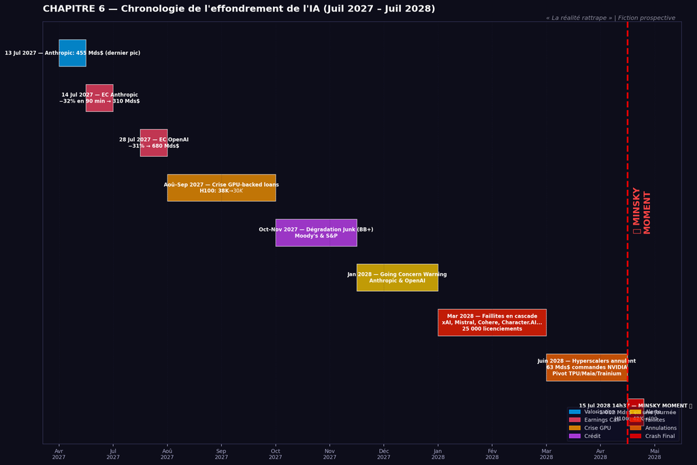
À suivre : Partie II — Octobre 2027–Janvier 2028 : La panique s'installe
Les résultats du troisième trimestre devaient être publiés mi-octobre. Les analystes, échaudés par les surprises négatives de juillet, avaient révisé leurs attentes à la baisse. Ce n'était pas assez pessimiste.
Résultats T3 2027 — Anthropic et OpenAI
Anthropic — Résultats T3 2027
| Indicateur | Résultat | Vs T2 |
|---|---|---|
| Revenus | 2,34 Md$ | +7 % |
| Perte nette | 9,12 Md$ | +16 % |
| Trésorerie fin T3 | 42 Md$ | — |
| Durée de vie restante | 11 mois | |
Anthropic brûlait désormais 3 milliards de dollars par mois. En trois mois, sept mois de survie s'étaient évaporés.
L'earnings call fut bref et tendu. Dario Amodei tenta d'expliquer que les coûts de Claude 5 étaient plus élevés qu'anticipé en raison de recherches supplémentaires sur la sécurité. Les analystes ne l'écoutaient déjà plus. Ils calculaient. 11 mois de durée de vie. À 3 milliards par mois. Trésorerie à zéro en septembre 2028.
L'action Anthropic chuta de 28 % en négociations après clôture. De 285 milliards à 205 milliards. En trois mois, depuis juillet, la valorisation avait perdu 250 milliards — plus que le PIB du Portugal.
OpenAI — Résultats T3 2027
| Indicateur | Résultat | Vs T2 |
|---|---|---|
| Revenus | 13,24 Md$ | +13 % |
| Perte nette | 11,18 Md$ | +16 % |
| Trésorerie fin T3 | 97 Md$ | — |
| Durée de vie restante | 20 mois — violation de clause imminente à 18 mois | |
Ratio perte sur revenus : 84 % au T3, contre 81 % au T2. Chaque dollar de revenu supplémentaire coûtait 1,84 dollar à générer.
L'action OpenAI chuta de 31 % en négociations après clôture. De 620 milliards à 428 milliards. En trois mois, 552 milliards de valorisation avaient disparu — plus que le PIB de la Suède.
3 novembre 2027 — Entrée en territoire junk
Le 3 novembre à 9h30, Moody's dégrada Anthropic de BBB (dernier cran de la catégorie qualité investissement) à BB+ (catégorie spéculative,[18] communément appelée junk). OpenAI fut dégradée de BBB+ à BB+. À 10h15, S&P dégrada Anthropic de BBB à BB.
Les conséquences furent immédiates et mécaniques. Des centaines de fonds institutionnels ont des mandats qui leur interdisent de détenir des obligations junk. Fonds de pension, fonds mutuels, compagnies d'assurance : tous devaient vendre. Les obligations Anthropic 5,2 % tombèrent à 54 cents le dollar. Les obligations OpenAI 4,8 % à 68 cents.
Le mécanisme silencieux — Les appels de marge GPU
En octobre, le prix au comptant des H100 chuta à 28 000 dollars. Les ratios prêt sur valeur passèrent à 82 % pour OpenAI, 86 % pour Anthropic. Les banques exigèrent soit un remboursement partiel, soit une garantie supplémentaire. OpenAI et Anthropic n'avaient ni l'un ni l'autre. Elles décidèrent de vendre des GPU.
Le 18 octobre, OpenAI mit en vente 80 000 H100 sur les plateformes de revente professionnelles. Les GPU se vendirent finalement à 24 000 dollars. Le 2 novembre, Anthropic vendit 35 000 H100 à 22 000 dollars l'unité.
Ces ventes forcées eurent un effet immédiat. Le prix au comptant des H100 s'effondra : de 28 000 dollars début octobre à 18 000 dollars fin novembre. Une chute de 36 % en deux mois. C'est là que la spirale déflationniste commença vraiment — la baisse de prix des actifs forçait plus de ventes, qui faisaient encore baisser les prix, dans un mécanisme vicieux décrit par Irving Fisher dès 1933.
La titrisation qui tue — Les GPU-backed CLO
Goldman Sachs et JPMorgan avaient titrisé les prêts garantis par GPU en CLO.[16] Goldman avait titrisé 12,4 milliards de prêts GPU en trois CLO. JPMorgan 9,8 milliards en deux CLO. Total du marché : environ 28 milliards.
En juillet 2027, quand les GPU valaient 42 000 dollars, ces CLO fonctionnaient parfaitement. Mais en novembre 2027, avec les GPU à 18 000 dollars, tout le modèle s'effondrait. Les taux de récupération[17] tombaient de 85 % à 43 %. Les tranches AAA n'étaient plus AAA. Le 28 novembre, les dégradations tombèrent en cascade.
Dégradations des CLO GPU — Novembre 2027
| CLO | Tranche | Note juill. | Note nov. |
|---|---|---|---|
| Goldman 2026-1 (4,2 Md$) | Senior | AAA | BBB (−6 crans) |
| Goldman 2026-1 | Mezzanine | A | B– (junk profond) |
| Goldman 2026-1 | Equity | — | Perte totale |
| JPMorgan 2026-2 (3,8 Md$) | Senior | AAA | BBB– (frôle le junk) |
| JPMorgan 2026-2 | Mezzanine | BBB | CCC (défaut probable) |
Les tranches senior, achetées à 100 cents le dollar en juillet 2027, notées AAA, tombèrent à 62 cents en décembre. Le mot subprime commença à circuler. Cette fois, ce n'était pas une blague.
Le 8 décembre 2027, un cabinet d'avocats déposa un recours collectif contre OpenAI devant le tribunal fédéral du Delaware, alléguant de fausses déclarations substantielles lors de la tournée de présentation IPO. La plainte citait des e-mails internes où le directeur financier écrivait que leurs modèles montraient un besoin de 250 milliards de revenus annuels pour atteindre l'équilibre. La réponse de Sam Altman suggérait de concentrer la présentation sur le scénario 50 milliards — le scénario 250 milliards ne ferait que « confondre les investisseurs ».
Ces e-mails avaient été divulgués. Personne ne savait comment. Mais ils étaient authentiques et dévastateurs. Le 15 décembre, un recours collectif similaire fut déposé contre Anthropic. Les actions chutèrent encore. Anthropic passa de 205 milliards à 140 milliards. OpenAI de 428 milliards à 310 milliards.
15 janvier 2028 — L'avertissement going concern
Anthropic — Résultats T4 2027
| Indicateur | Résultat | Note |
|---|---|---|
| Revenus | 2,12 Md$ | −9 % — première baisse trimestrielle |
| Perte nette | 10,84 Md$ | +19 % |
| Trésorerie fin T4 | 24,2 Md$ | — |
| Durée de vie restante | 5,5 mois — Fin programmée : juin 2028 | |
En page 3 du communiqué, en caractères gras, une phrase que les comptables connaissent bien : l'avertissement going concern.[19] C'était la première fois qu'une entreprise valorisée à plus de 100 milliards de dollars publiait un tel avertissement. Anthropic annonça simultanément : licenciements de 2 400 employés (40 % de l'effectif), arrêt de Project Atlas, suspension du développement de Claude 6, et recherche active d'une fusion ou acquisition. L'action Anthropic tomba à 82 milliards.
Deux semaines plus tard, OpenAI publia ses résultats T4 2027 avec la même phrase. Sam Altman, lors de l'earnings call, parla d'une voix fatiguée, presque résignée. Un analyste lui demanda si la faillite était sur la table. Sam ne répondit pas immédiatement. Dix-huit secondes de silence. Puis il dit qu'ils exploraient « toutes les options pour assurer la continuité de leur mission ». Ce n'était pas un déni. C'était une confirmation. L'action OpenAI chuta à 210 milliards. Les obligations tombèrent à 18 cents le dollar.
Fin de la Partie II
À suivre : Partie III — Février–Mai 2028 : La descente aux enfers
Février 2028 commença avec une certitude : les deux géants de l'IA étaient condamnés. La seule question était : combien de temps leur restait-il ? Et qui d'autre tomberait avec eux ?
La spirale déflationniste des GPU s'accélérait. En février, OpenAI avait dû vendre 120 000 H100 supplémentaires pour satisfaire les appels de marge de JPMorgan et Goldman Sachs. Prix de vente moyen : 14 000 dollars l'unité — contre 42 000 six mois plus tôt. Anthropic vendit 68 000 H100 en mars à 11 000 dollars pièce.
Chute du prix au comptant des H100 — Début 2028
| Mois | Prix H100 | Variation |
|---|---|---|
| Janvier 2028 | 18 000 $ | — |
| Février 2028 | 14 000 $ | −22 % |
| Mars 2028 | 11 000 $ | −21 % |
| Avril 2028 | 8 000 $ | −27 % |
Goldman Sachs et JPMorgan provisionnèrent des pertes totales de 18,4 milliards de dollars sur leurs portefeuilles de prêts garantis par GPU. Total des provisions bancaires sur l'exposition IA : 52,7 milliards de dollars. Mais les banques survivraient — leurs ratios de capital Tier 1[30] restaient au-dessus de 10 %. La régulation post-2008 avait fonctionné. Ce qui ne survivrait pas, c'était l'écosystème IA lui-même.
3 mars 2028 — xAI suspend ses opérations
Elon Musk publia un tweet à 7h42 du matin : « xAI suspend ses opérations avec effet immédiat. Levé 18 milliards, brûlé 22 milliards. Le modèle économique IA est fondamentalement cassé aux coûts de calcul actuels. J'avais tort. Désolé pour l'équipe. » xAI, valorisée 220 milliards lors de sa tentative d'introduction en bourse en mai 2027, valait désormais 12 milliards. Les 3 800 employés furent licenciés en une journée.
8 mars 2028 — Mistral AI en faillite
En France, Mistral AI, la licorne[24] française valorisée 15 milliards en 2026, déposa son bilan. Revenus 2027 : 340 millions d'euros. Pertes : 2,8 milliards d'euros. Ratio : 823 %. Le gouvernement français refusa la nationalisation. Le 8 mars, Mistral AI entra en redressement judiciaire.[31] Ses actifs furent vendus à Meta pour 800 millions d'euros. Les créanciers récupérèrent 22 cents par euro investi. Les 1 200 employés furent licenciés. Le hashtag MistralAIDead fut en première place des tendances en France pendant 48 heures.
Cohere (Canada, valorisée 8 milliards) déposa une demande de protection CCAA[22] le 12 mars. Character.AI (5 milliards) fut liquidée le 15 mars. Inflection AI cessa toutes ses opérations le 20 mars, ses actifs vendus à Microsoft pour 120 millions. En trois semaines, cinq licornes IA étaient mortes. Entre le 1er et le 31 mars 2028, 127 startups IA annoncèrent leur fermeture. Valorisation combinée en 2026 : 48 milliards. Valeur de liquidation en 2028 : 2,4 milliards.
Emplois détruits — Mars 2028
| Entreprise | Licenciements |
|---|---|
| xAI | 3 800 |
| Mistral AI | 1 200 |
| Cohere | 980 |
| Character.AI | 680 |
| Inflection AI | 420 |
| 127 autres startups | ~18 000 |
| Total estimé — mars 2028 seulement | ~25 000 personnes |
Avril–Mai 2028 — Les derniers earnings calls et les tentatives désespérées
Le 14 avril 2028, Anthropic publia ses résultats T1 2028 : 1,68 Md$ de revenus (−21 %), 8,24 Md$ de perte nette, trésorerie à 11,2 Md$. Durée de vie restante : 32 jours. Le communiqué annonçait clairement une demande de protection Chapter 11[20] dans les 60 jours en l'absence d'une transaction. Dario Amodei, lors de l'earnings call, parla d'une voix brisée. « C'est le moment le plus douloureux de ma vie professionnelle. Nous n'avons pas pu construire une entreprise durable avec ces structures de coûts. J'assume l'entière responsabilité. » L'action Anthropic tomba à 38 milliards.
Le 29 avril, Sam Altman admit lors de l'earnings call d'OpenAI que « la probabilité qu'OpenAI survive en tant qu'entité indépendante au-delà du troisième trimestre 2028 est faible ». L'action OpenAI chuta à 102 milliards.
En mai, toutes les tentatives de sauvetage échouèrent. Tesla, Meta, ByteDance, Alibaba, Apple, Saudi PIF, Abu Dhabi, BlackRock : toutes les portes se fermèrent. Le 12 mai, un e-mail interne de Dario Amodei fut divulgué : « Nous avons environ 4 semaines de trésorerie opérationnelle restante. […] Je vous demande de commencer à vous préparer à plusieurs scénarios, incluant une interruption potentielle des opérations. Les ressources humaines tiendront des sessions cette semaine sur les notifications WARN Act[21] et les options d'indemnités de licenciement. »
Tableau de bord — 31 mai 2028
| Anthropic | 32 Md$ · Trésorerie : 2,8 Md$ · Durée de vie : 8 jours |
| OpenAI | 86 Md$ · Trésorerie : 38 Md$ · Violation de clause confirmée |
| H100 prix au comptant | 8 000 $ (−81 % depuis juillet 2027) |
| Obligations Anthropic | 6 cents le dollar |
| Obligations OpenAI | 9 cents le dollar |
Fin de la Partie III
À suivre : Partie IV — Juin 2028 : Le coup de grâce silencieux
Juin 2028 commença dans un silence étrange. Les hyperscalers,[35] ceux qui avaient construit l'infrastructure sur laquelle toute l'industrie IA reposait, étaient en train de changer d'avis. En dix jours, ils allaient annuler 63 milliards de commandes NVIDIA.
5 juin 2028 — Google Cloud Next : La révélation TPU
Sundar Pichai annonça la disponibilité générale du TPU v7 Ironwood avec compatibilité PyTorch[33] — offrant jusqu'à 4,2× les performances des GPU NVIDIA pour l'inférence, à 55–60 % du prix. Migration interne : 87 % des charges de travail Google. Claude 5 d'Anthropic : entraîné et servi exclusivement sur ce matériel. NVIDIA chuta de 8 % dans l'heure.
Le 11 juin, Andy Jassy dévoila Trainium 3 (4× plus efficace) et une baisse immédiate de 58 % des prix d'instances de calcul IA. NVIDIA perdit 6 % supplémentaires.
12–21 juin 2028 — Les quatre communiqués qui tuèrent NVIDIA
Alphabet — 12 juin 2028
« Réduction des achats GPU prévus d'environ 18 milliards de dollars sur les 18 prochains mois. La demande entreprise pour les services IA a été inférieure aux anticipations. »
Microsoft — 16 juin 2028
« Réduction des acquisitions GPU prévues d'environ 22 milliards de dollars jusqu'à la fin de l'exercice fiscal 2029. Les taux d'utilisation des charges de travail IA clients ont été inférieurs aux projections initiales. »
AWS — 19 juin 2028
« Réduction des achats GPU prévus d'environ 15 milliards de dollars jusqu'en 2029. L'adoption client des services d'IA générative a été forte en phase d'expérimentation mais plus lente en déploiement de production. »
Meta — 21 juin 2028
« MTIA v4 couvre désormais 80 % de nos charges de travail. Réduction des achats GPU prévus d'environ 8 milliards de dollars jusqu'en 2029, représentant une réduction de 65 % par rapport aux plans précédents. Les capacités actuelles des modèles IA ont atteint un plateau par rapport à l'investissement en calcul requis pour des améliorations marginales. »
Annulations de commandes NVIDIA — 12–21 juin 2028
| Hyperscaler | Annulation | % du plan initial |
|---|---|---|
| 18 Md$ | 56 % | |
| Microsoft | 22 Md$ | 58 % |
| Amazon | 15 Md$ | 58 % |
| Meta | 8 Md$ | 65 % |
| Total annulé | 63 Md$ | 52 % du carnet 2028–2029 |
Impact — 12 au 21 juin 2028
| NVIDIA action | 420 $ → 180 $ (−57 % en 10 jours) |
| NVIDIA capitalisation perdue | 920 Md$ |
| H100 prix au comptant | 8 000 $ → 2 800 $ (−65 %) |
| OpenAI | 86 Md$ → 52 Md$ (−40 %) |
| Anthropic | 32 Md$ → 18 Md$ (−44 %) |
La logique était implacable. L'inférence représentait 80–85 % des coûts totaux de calcul IA. En la capturant avec des ASIC[34] custom 50–60 % moins chers, les hyperscalers rendaient les GPU progressivement optionnels — réservés à l'entraînement de pointe le plus extrême. Le monopole CUDA[32] n'avait pas résisté à l'équation économique.
Tableau de bord — 30 juin 2028
| NVIDIA | 180 $/action · 680 Md$ de capitalisation (−68 % depuis jan. 2027) |
| OpenAI | 48 Md$ (−95 % depuis le pic) |
| Anthropic | 16 Md$ (−97 % depuis le pic) |
| H100 prix au comptant | 2 800 $ (−93 % depuis juill. 2027) |
Ce que les marchés ne savaient pas, c'est que le prix des GPU allait encore chuter. De 2 800 dollars à 400 dollars en deux semaines. Car le 15 juillet 2028, à 14h37 précises, heure de New York, quelque chose allait se produire qui forcerait la mise sur le marché de 2,86 millions de H100 en 83 minutes. Et quand 2,86 millions d'unités d'un actif arrivent sur le marché en moins de deux heures, le prix ne chute pas. Il s'effondre.
Le Minsky Moment[29] approchait. Plus que 15 jours.
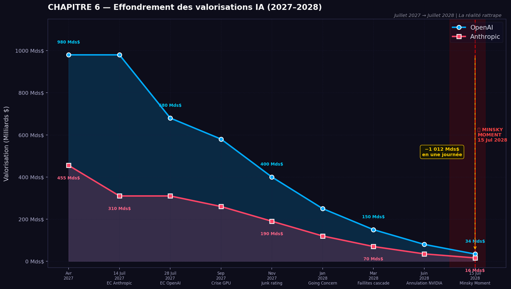
Fin de la Partie IV
À suivre : Partie V — 15 juillet 2028, 14h37–16h00 : Les 83 minutes
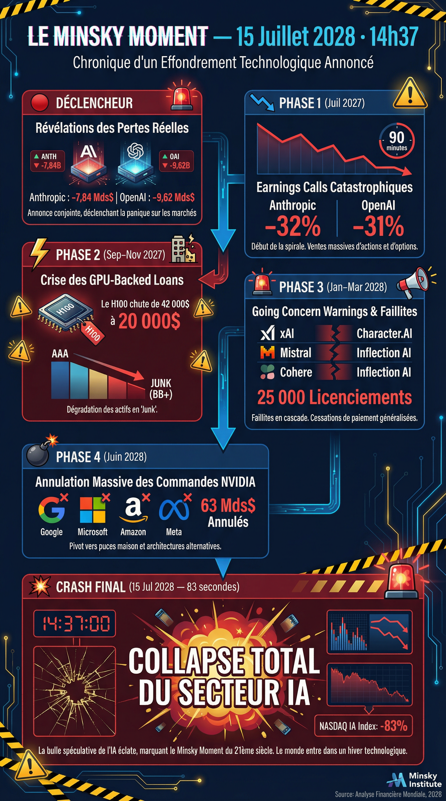
08h00–14h36 — Le calme avant
Le 15 juillet 2028 était un lundi. À New York, le ciel était dégagé, 28 degrés Celsius. Les marchés ouvrirent à 9h30 dans une ambiance morne. Anthropic ouvrit à 15,8 milliards. OpenAI à 46,2 milliards. NVIDIA à 178 dollars. À 14h30, le VIX[26] monta à 46. Niveau de panique élevée. À 14h36:58, les tickers se gelèrent pendant deux secondes.
Puis le monde bascula.
14h37:02 — Anthropic
Communiqué immédiat d'Anthropic — 15 juillet 2028, 14h37
« Anthropic annonce qu'elle est incapable d'effectuer le paiement trimestriel d'intérêts de 1,3 milliard de dollars dû aujourd'hui sur son émission obligataire de 25 milliards. L'entreprise a épuisé toute liquidité disponible et est entrée en défaut technique.[28] Anthropic a engagé Weil, Gotshal & Manges comme conseil en faillite et déposera une demande de réorganisation Chapter 11 dans les 72 heures. »
Dario Amodei : « C'est le moment le plus difficile de l'histoire d'Anthropic. Nous avons construit une technologie extraordinaire mais n'avons pas pu construire une entreprise durable. J'assume l'entière responsabilité. »
Six secondes plus tard, le trading sur l'action Anthropic fut suspendu automatiquement — disjoncteur[27] déclenché. Dernier prix : 15,8 milliards. Les obligations Anthropic s'effondrèrent de 3 cents à 1 cent en trente secondes.
14h37:45 — La contagion immédiate
Quarante-trois secondes après l'annonce Anthropic, l'action OpenAI chuta brutalement. 46,2 milliards, puis 42,4, puis 38,6 en trente secondes. Le volume de négociation explosa : 180 millions d'actions échangées en moins d'une minute. Record historique absolu.
14h38:12 — OpenAI
Communiqué immédiat d'OpenAI — 15 juillet 2028, 14h38
« OpenAI annonce qu'elle est incapable d'effectuer le paiement trimestriel d'intérêts de 2,16 milliards de dollars dû aujourd'hui sur son émission obligataire de 45 milliards. L'entreprise est entrée en défaut technique selon ses accords de crédit. OpenAI a engagé Kirkland & Ellis comme conseil en restructuration. »
Sam Altman : « Nous avons construit des systèmes de niveau AGI. Nous avons changé le monde. Mais nous n'avons pas pu résoudre l'équation économique. Ce n'est pas la fin de notre mission, mais c'est la fin de ce chapitre. »
Huit secondes plus tard, le trading OpenAI fut suspendu. Dernier prix : 34,2 milliards. Chute de 26 % en soixante-dix secondes. Les deux géants de l'IA, valorisés 1 460 milliards combinés dix-huit mois plus tôt, venaient d'annoncer leur défaut simultanément.
14h39–14h42 — Les quatre minutes d'apocalypse
Cascade de défauts — 14h39–14h42
| Heure | Entreprise | Annonce |
|---|---|---|
| 14h39:18 | xAI | Initiation de procédures de liquidation formelle |
| 14h40:02 | Mistral AI | Conversion en liquidation judiciaire |
| 14h40:34 | Cohere | Liquidation CCAA |
| 14h41:08 | Inflection AI | Procédures de dissolution formelle |
| 14h41:42 | Character.AI | Faillite Chapter 7[23] — liquidation complète |
En quatre minutes, 14 licornes de l'IA annoncèrent simultanément défauts, liquidations ou faillites. Valorisation combinée en avril 2027 : 680 Md$. Valeur le 15 juillet 2028 à 14h42 : 8 Md$.
14h42–14h47 — L'effondrement du NASDAQ
Le NASDAQ perdit 8,4 % en cinq minutes. À 14h47, le disjoncteur Level 1 se déclencha automatiquement — tout le trading sur le NYSE et le NASDAQ fut suspendu 15 minutes. Première fois depuis le krach COVID de mars 2020.
Sur CNBC en direct : « C'est le lundi Lehman. C'est le lundi noir de notre génération. La bulle IA vient d'éclater en temps réel. » Sur X, 2,4 millions de tweets apparurent en dix minutes avec le hashtag #AIMinskyMoment.
À 15h02, trois minutes avant la fin du disjoncteur, les terminaux Bloomberg affichèrent une alerte rouge : événement majeur de liquidation GPU imminent. Goldman Sachs : 840 000 H100. JPMorgan : 920 000. Morgan Stanley : 480 000. Bank of America : 380 000. CoreWeave : 620 000. Total estimé : 3,24 millions d'unités.
15h05–15h50 — La réouverture et l'effondrement des GPU
À 15h05, les marchés rouvrirent. En dix minutes, le prix au comptant des H100 plongea de 2 800 $ à 580 $. Puis, à 15h24, CoreWeave annonça la liquidation immédiate de 1 240 000 unités à partir de 1 500 dollars l'unité. Un trader anonyme, cité plus tard par le Wall Street Journal : « J'ai vu le chiffre 1 240 000 et j'ai cru à une erreur de frappe. Puis j'ai compris. Ils vidaient tout. Absolument tout. »
De 1 500 $ à 580 $ en six minutes. Lambda Labs, Stability AI et Inflection AI ajoutèrent 506 000 unités supplémentaires. Le prix au comptant passa sous les 500 $, puis 420, 380, 340, 280 dollars.
De 42 000 dollars en juillet 2027 à 280 dollars en juillet 2028. Une chute de 99,3 % en exactement 12 mois. Les H100, qui avaient été l'or noir de l'ère IA, valaient désormais moins qu'un iPhone d'occasion.
Le volume total de H100 mis en vente entre 15h05 et 15h50 atteignit 2,86 millions d'unités. Le prix toucha son plancher à 15h47 : 240 dollars. Des acheteurs opportunistes entrèrent alors massivement. Le prix remonta à 400 dollars. C'est ce prix qui resterait gravé dans l'histoire.
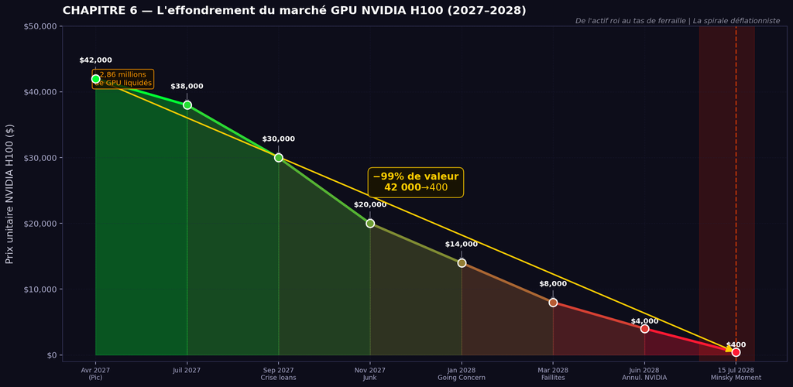
15h50–16h00 — La clôture
Le NASDAQ se stabilisa autour de 16 280 points, en baisse de 10,8 % sur la journée. NVIDIA clôtura à 118 dollars — moins 34 % sur la journée.
Derniers prix avant suspension définitive des cotations
| Anthropic | 15,8 Md$ (−97 % depuis le pic) |
| OpenAI | 34,2 Md$ (−97 % depuis le pic) |
Valorisation détruite — 15 juillet 2028
| Secteur | Valeur détruite |
|---|---|
| Anthropic + OpenAI | 62 Md$ |
| NVIDIA | 280 Md$ |
| Autres valeurs IA | 184 Md$ |
| Tech — secteur général | 486 Md$ |
| Total | 1 012 Md$ en une seule journée |
18h00–22h00 — Les dernières images
À San Francisco, dans le bâtiment OpenAI de Mission Street, les lumières s'éteignirent étage par étage. Dans les bureaux d'Anthropic sur Market Street, quelqu'un avait accroché une banderole à une fenêtre du 8e étage :
« Nous avons essayé de la construire en sécurité. Ce n'était pas suffisant. »
La photo fit le tour du monde en moins d'une heure.
À 22h00, un photographe du Wall Street Journal captura une image aérienne qui deviendrait iconique. Les douze centres de données de Project Nexus, parfaitement alignés dans le désert texan. Tous éteints. Aucune lumière. Valeur prévue en 2026 : 100 milliards de dollars. Valeur réelle ce soir-là : 1,2 milliard. Le titre du Wall Street Journal, sobre et définitif :
« Les cimetières du rêve AGI »
À minuit, le 15 juillet 2028 prenait fin. Ce n'était pas un simple krach. C'était la fin d'une illusion. Hyman Minsky l'avait écrit en 1986 : la finance Ponzi finit toujours par rencontrer la réalité. Ce jour-là, à 14h37 précises, la réalité avait rattrapé le rêve. En 83 minutes, l'industrie de pointe de l'IA s'était effondrée. 1 000 milliards évaporés. 23 entreprises mortes. 2,86 millions de GPU liquidés.
Le rêve AGI n'était pas mort. Mais il venait d'apprendre qu'il était mortel.
Fin des Parties I à V
Voir Fichier 2/2 — Épilogue · Analyses théoriques · Notes & Sources (35 notes)
Les définitions complètes figurent dans le Fichier 2/2.
[1] Earnings call : conférence trimestrielle obligatoire des sociétés cotées, enregistrée et publique.
[2] Consensus : moyenne des prévisions des analystes. Un résultat inférieur au consensus est appelé miss.
[3] Négociations après clôture (after-hours trading) : marché électronique ouvert de 16h à 20h EST après la fermeture officielle de la bourse.
[4] Points de base : 1 point de base = 0,01 %. 200 points de base = 2 %.
[5] Inférence : utilisation quotidienne d'un modèle IA déjà entraîné. Représente 80–85 % des coûts de calcul en déploiement.
[6] Prévisions officielles (guidance) : projections communiquées par l'entreprise sur ses résultats futurs. Les retirer est un signal négatif fort.
[7] AGI (Artificial General Intelligence) : intelligence artificielle générale, capable de toute tâche intellectuelle humaine. Objectif déclaré d'OpenAI, non atteint en 2028.
[8] Clauses contractuelles (covenants) : conditions financières minimales imposées par les contrats de dette. Leur violation déclenche des remboursements accélérés.
[9] Tournée de présentation (roadshow) : série de présentations aux investisseurs institutionnels avant une IPO. Les déclarations faites peuvent fonder des recours judiciaires si elles s'avèrent mensongères.
[10] GPU (Graphics Processing Unit) : processeur repurposé pour le calcul IA. Le H100 de NVIDIA était le standard de l'industrie, à 30 000–42 000 $ l'unité en 2024–2027.
[11] Garantie (collatéral) : actif mis en gage pour sécuriser un emprunt. En cas de défaut, le prêteur saisit et vend le collatéral.
[12] Titrisation / Titres adossés à des actifs (ABS) : regroupement de créances en un titre financier vendable, découpé en tranches de risque. Mécanisme central de la crise des subprimes en 2007–2008.
[13] Agences de notation : Moody's, S&P, Fitch. Leurs notations influencent mécaniquement qui peut détenir quels actifs.
[14] Ratio prêt sur valeur (LTV) : rapport entre le montant emprunté et la valeur du collatéral. Au-delà du seuil contractuel, l'emprunteur est sous-collatéralisé.
[15] Appel de marge (margin call) : demande du prêteur d'apporter un collatéral supplémentaire ou de rembourser partiellement, déclenchée par la baisse de valeur du collatéral.
[16] CLO (Collateralized Loan Obligation) : titrisation de prêts regroupés et découpés en tranches. Tranche senior : priorité maximale de remboursement (notée AAA). Tranche mezzanine : risque intermédiaire. Tranche equity : première à absorber les pertes, non notée.
[17] Taux de récupération (recovery rate) : pourcentage de la valeur nominale récupéré par les créanciers en cas de défaut. Standard historique : 40–50 %. Pour les GPU-backed CLO en 2028 : 8–22 %.
[18] Junk / Catégorie spéculative : toute obligation notée sous BBB– (S&P) ou Baa3 (Moody's). Le passage en junk force les ventes mécaniques des fonds institutionnels sous mandat investment-grade.
[19] Avertissement going concern : mention comptable obligatoire signalant un doute sérieux sur la capacité à poursuivre les activités dans les 12 mois. Déclenche les clauses d'accélération dans la plupart des contrats de dette.
[20] Chapter 11 : procédure américaine de réorganisation sous protection judiciaire. Le débiteur conserve le contrôle de ses actifs et négocie un plan de restructuration avec ses créanciers.
[21] WARN Act : loi américaine de 1988 imposant 60 jours de préavis avant licenciements massifs dans les entreprises de 100 salariés ou plus.
[22] CCAA : loi canadienne sur les arrangements avec les créanciers — équivalent du Chapter 11 américain.
[23] Chapter 7 : procédure américaine de liquidation totale et immédiate. Les actionnaires ne récupèrent rien.
[24] Licorne : startup valorisée à plus d'un milliard de dollars.
[25] Vente à découvert (short selling) : vendre des actions empruntées pour les racheter moins cher ensuite, en pariant sur la baisse.
[26] VIX : indice de volatilité des marchés, appelé « indice de la peur ». Niveau normal : 10–20. Panique : au-delà de 40.
[27] Disjoncteur (circuit breaker) : mécanisme automatique suspendant les transactions en cas de chute rapide. Level 1 (−7 % sur l'indice) = 15 minutes de suspension.
[28] Défaut technique : incapacité à honorer un paiement contractuel à la date prévue. Déclenche l'exigibilité immédiate de toute la dette.
[29] Minsky Moment : point de bascule où les acteurs surendettés doivent vendre des actifs pour rembourser leurs dettes, déclenchant une spirale déflationniste irréversible.
[30] Ratio Tier 1 : mesure de solidité bancaire (Bâle III). Minimum réglementaire : 6 %. Les grandes banques américaines maintenaient 11–14 % en 2028.
[31] Redressement judiciaire : procédure française de protection contre les créanciers pendant une réorganisation — équivalent du Chapter 11 américain.
[32] CUDA : plateforme de calcul parallèle propriétaire de NVIDIA. Standard de facto de l'industrie IA jusqu'à l'émergence des ASIC custom.
[33] PyTorch : bibliothèque open source d'apprentissage automatique développée par Meta. Standard de facto pour l'entraînement des modèles IA.
[34] ASIC (Application-Specific Integrated Circuit) : puce conçue sur mesure pour une tâche précise. Les ASIC des hyperscalers (TPU, Trainium, Maia, MTIA) offrent 4× les performances des GPU pour l'inférence à la moitié du coût.
[35] Hyperscalers : fournisseurs de services d'informatique dématérialisée à l'échelle mondiale — Google Cloud, Microsoft Azure, Amazon AWS, Meta.
Épilogue · Analyses théoriques · Notes & Sources
Épilogue — 16 juillet 2028 : Le lendemain matin
16 juillet 2028, 06h14 — Abidjan, Côte d'Ivoire
Je n'avais pas dormi.
Depuis mon appartement du Plateau, j'avais regardé les écrans toute la nuit. Bloomberg, Reuters, X, le fil Telegram des traders africains que je suis depuis 2024. À 3h17 du matin, heure d'Abidjan, j'avais vu les premières images des bureaux d'OpenAI éteints. À 4h02, les photos aériennes des centres de données Project Nexus, ces immenses rectangles noirs dans le désert texan, sans lumière.
Dehors, Abidjan dormait. Les générateurs des voisins ronronnaient. Quelque part dans la rue, un vendeur de pain commençait sa journée. La vie ordinaire, indifférente à l'effondrement de 1 000 milliards de dollars à 9 000 kilomètres d'ici.
J'avais commencé à écrire ce livre en janvier 2024. Quatre ans et demi. J'avais prédit juillet 2028 — pas exactement, j'avais dit « entre juin et septembre 2028 ». J'avais prédit le Minsky Moment,[29] la spirale déflationniste des GPU, la titrisation[12] toxique, l'incapacité structurelle à atteindre la rentabilité. Avoir raison sur tout ça n'apportait aucune satisfaction. Seulement une tristesse étrange.
Car ces entreprises avaient embauché de vraies personnes. Des ingénieurs brillants qui croyaient sincèrement construire quelque chose de révolutionnaire. Des chercheurs passionnés par la sécurité de l'IA. Des commerciaux qui avaient vendu à leurs clients une promesse en laquelle ils croyaient. Ce soir-là, ils mettaient leurs affaires dans des cartons.
La technologie, elle, survivrait. L'IA générative n'était pas morte — elle était simplement devenue la propriété exclusive des quatre seigneurs. Google, Microsoft, Amazon, Meta. Ils avaient laissé les startups tester le marché, valider les cas d'usage, former les clients. Puis ils avaient attendu l'effondrement pour tout racheter à prix dérisoire.
C'est ce que Marx appelait la dévalorisation du capital constant comme mécanisme de « reset » du taux de profit. Ce que Minsky appelait le retour inévitable à la réalité après la finance Ponzi. Ce que Kindleberger appelait la phase de revulsion — le dégoût brutal qui succède à l'euphorie.
J'avais regardé tout ça depuis Abidjan. Depuis un continent qui n'avait jamais eu accès aux GPU à 42 000 dollars. Qui n'avait jamais pu participer à la course aux modèles de pointe. L'Afrique avait été exclue de l'euphorie. Elle serait peut-être mieux placée pour traverser la reconstruction — avec des puces à 400 dollars au lieu de 42 000.
À 6h14, le soleil se levait sur le golfe de Guinée. Orange et or sur les vagues. Quelque chose finissait. Quelque chose commençait.
Je fermai mon ordinateur et sortis acheter du pain.
Hyman Minsky distinguait trois types de financement dans son hypothèse de l'instabilité financière (Stabilizing an Unstable Economy, 1986) :
Taxonomie de Minsky — Application au secteur IA 2023–2028
| Type | Définition | Cas IA |
|---|---|---|
| Hedge finance | Les revenus couvrent intérêts ET principal | Aucune startup IA à ce stade |
| Speculative finance | Les revenus couvrent les intérêts seulement | OpenAI fin 2025 — brièvement |
| Finance Ponzi | Les revenus ne couvrent même plus les intérêts | OpenAI et Anthropic depuis leur IPO jusqu'au défaut |
Minsky, H. P. — Stabilizing an Unstable Economy (1986), p. 230
« La stabilité est déstabilisante. La stabilité apparente engendre des comportements qui mènent à l'instabilité. »
Application directe : les années 2023–2025 semblaient stables — ChatGPT fonctionnait, les revenus croissaient, les investisseurs s'enrichissaient. Cette apparente stabilité encouragea des paris toujours plus grands, toujours plus endettés, jusqu'au point de rupture du 15 juillet 2028.
Marx, K. — Le Capital, Livre III, Chapitre 15 (1867–1894)
« La dévalorisation périodique du capital existant est un moyen immanent au mode de production capitaliste de retarder la baisse du taux de profit. »
Dévalorisation du capital constant GPU — 2024–2028
| Date | Valeur unitaire H100 | Capital constant total (~40 M unités) |
|---|---|---|
| Septembre 2024 | 30 000 $ | ~804 Md$ |
| Juillet 2027 | 42 000 $ | ~1 680 Md$ |
| 15 juillet 2028, 14h37 | 2 800 $ | ~112 Md$ |
| 15 juillet 2028, 15h50 | 400 $ | ~16 Md$ |
| Dévalorisation totale | −98,7 % en 12 mois | |
Les GPU existent toujours physiquement — leur valeur d'usage est intacte. Seule leur valeur d'échange s'est effondrée. C'est la distinction marxiste fondamentale.
En juillet 2028, les quatre seigneurs acquirent l'essentiel des GPU liquidés à 400–2 100 dollars l'unité. Un capital constant qui leur aurait coûté 756 milliards en 2024 leur coûta environ 53 milliards. Économie : 703 milliards. Leurs concurrents étaient éliminés. Le taux de profit était restauré.
Fisher, I. — « The Debt-Deflation Theory of Great Depressions », Econometrica (1933)
« Le surendettement initial conduit à des liquidations qui font chuter les prix, ce qui augmente le fardeau réel de la dette, provoquant de nouvelles liquidations. »
Les 9 étapes de Fisher — Application IA 2027–2028
| Étape | Théorie Fisher | Cas IA |
|---|---|---|
| 1 | Surendettement initial | 85 Md$ d'obligations IA émises en 2026 |
| 2 | Liquidation des dettes | Ventes forcées de GPU, juillet 2027 – juillet 2028 |
| 3 | Contraction du crédit | Dégradations junk[18], fermeture du marché obligataire IA |
| 4 | Chute des prix des actifs | H100 : 42 000 $ → 400 $ (−99 %) |
| 5 | Baisse de la valeur nette | Anthropic : 455 Md$ → 15,8 Md$ ; OpenAI : 980 Md$ → 34,2 Md$ |
| 6 | Baisse de la production | Arrêt GPT-6, Claude 6 ; 127 startups fermées en mars 2028 |
| 7 | Pessimisme et perte de confiance | #AIMinskyMoment : 2,4 M de tweets en 10 min |
| 8 | Thésaurisation | Les quatre seigneurs n'investissent plus — ils attendent et rachètent |
| 9 | Effondrement des rendements | CLO[16] GPU-backed : taux de récupération[17] 8–22 % |
Les 5 phases de Kindleberger — Bulle IA 2022–2028
| Phase | Définition | Cas IA | Période |
|---|---|---|---|
| Déplacement | Choc exogène créant de nouvelles opportunités | ChatGPT — 100 M d'utilisateurs en 59 jours | Nov. 2022 |
| Boom | Expansion du crédit, afflux de capitaux | 29 Md$ levés en capital-risque en 2023 | 2023–2024 |
| Euphorie | Déconnexion totale entre prix et fondamentaux | IPO Anthropic 320 Md$, OpenAI 650 Md$, Project Nexus 180 Md$ | 2025–2026 |
| Détresse | Premières fissures, alertes | Earnings calls[1] juillet 2027 · dégradations junk nov. 2027 | Juill.–déc. 2027 |
| Revulsion | Panique généralisée, effondrement brutal | 15 juillet 2028, 14h37 — 83 minutes · −99 % GPU | 15 juill. 2028 |
Destruction de valeur totale — Juillet 2027 – Juillet 2028
| Catégorie | Valeur juill. 2027 | Valeur juill. 2028 | Perte |
|---|---|---|---|
| Anthropic (capitalisation) | 455 Md$ | 15,8 Md$ | −97 % |
| OpenAI (capitalisation) | 980 Md$ | 34,2 Md$ | −97 % |
| NVIDIA (capitalisation) | ~2 100 Md$ | ~450 Md$ | −79 % |
| Autres valeurs IA cotées | ~480 Md$ | ~62 Md$ | −87 % |
| Capital constant GPU | 1 680 Md$ | 16 Md$ | −99 % |
| Obligations IA (valeur de marché) | 85 Md$ | ~6 Md$ | −93 % |
| Destruction totale estimée | ~3 800 Md$ | ||
La bulle IA de 2023–2028 fut une bulle classique — ni plus ni moins irrationnelle que la bulle des chemins de fer du XIXe siècle, la bulle des dot-com de 2000, la bulle immobilière de 2008. Dans chacun de ces cas, la technologie sous-jacente était réelle. La demande était réelle. Mais les valorisations et les structures de financement étaient déconnectées de toute réalité économique fondamentale. Ce que Marx aurait appelé la phase de monopolisation du capital. Ce que, depuis Abidjan, on appelle simplement : le néo-féodalisme de l'IA.
Minsky
Minsky, H. P. (1986). Stabilizing an Unstable Economy. Yale University Press.
Fisher
Fisher, I. (1933). « The Debt-Deflation Theory of Great Depressions ». Econometrica, vol. 1, n° 4, p. 337–357.
Marx
Marx, K. (1867–1894). Le Capital, Livre III, Chapitre 15. Éditions Sociales.
Kindleberger
Kindleberger, C. P. (1978). Manias, Panics, and Crashes: A History of Financial Crises. Basic Books.
[1] Earnings call : conférence téléphonique trimestrielle obligatoire pour les sociétés cotées. Enregistrée, transcrite et publique — les analystes peuvent poser des questions en direct aux dirigeants.
[2] Consensus / Miss : le consensus est la moyenne des prévisions des analystes financiers sur un indicateur. Un résultat inférieur au consensus est appelé miss ; supérieur, beat. Un miss de 13 % sur les revenus est jugé très significatif dans l'industrie tech.
[3] Négociations après clôture (after-hours trading) : marché électronique ouvert de 16h00 à 20h00 EST, après la fermeture officielle de la bourse. Volumes réduits mais volatilité amplifiée — les annonces de résultats y font les plus grands mouvements de cours.
[4] Points de base : unité standard de mesure des variations de taux. 1 point de base = 0,01 %. 200 points de base = 2 %. Utilisé pour éviter toute ambiguïté sur les pourcentages de pourcentages.
[5] Inférence : utilisation quotidienne d'un modèle IA déjà entraîné pour répondre aux requêtes — chat, génération, analyse. Représente 80–85 % des coûts totaux de calcul en phase de déploiement massif.
[6] Prévisions officielles (guidance) : projections communiquées par la direction d'une entreprise sur ses résultats futurs. Les retirer en cours d'exercice est un signal négatif fort indiquant que la direction elle-même ne sait plus ce qu'elle peut promettre.
[7] AGI (Artificial General Intelligence) : intelligence artificielle générale, capable de performer n'importe quelle tâche intellectuelle humaine sans reprogrammation. Objectif explicitement déclaré d'OpenAI. Non atteint en 2028.
[8] Clauses contractuelles (covenants) : conditions financières minimales imposées aux emprunteurs dans les contrats obligataires. Les covenants de maintenance exigent le maintien permanent de certains ratios — leur violation déclenche l'exigibilité immédiate et accélérée de la dette.
[9] Tournée de présentation (roadshow) : série intensive de présentations aux investisseurs institutionnels dans les semaines précédant une introduction en bourse. Les déclarations faites en roadshow ont une valeur juridique — elles peuvent fonder des recours collectifs si elles s'avèrent mensongères ou trompeuses.
[10] GPU (Graphics Processing Unit) : processeur graphique repurposé pour le calcul IA. Le H100 de NVIDIA (2022) devint le standard de l'industrie, à 30 000–42 000 $ l'unité en 2024–2027. Un cluster d'entraînement de modèles de pointe en requiert des dizaines de milliers.
[11] Garantie (collatéral) : actif mis en gage pour sécuriser un prêt. En cas de défaut de l'emprunteur, le prêteur peut saisir et liquider le collatéral. L'utilisation des GPU eux-mêmes comme collatéral était une innovation financière — et un risque systémique non anticipé.
[12] Titrisation / Titres adossés à des actifs (ABS) : technique consistant à regrouper des créances individuelles (ici les prêts garantis par GPU) en un titre financier vendable, découpé en tranches de risque décroissant. Mécanisme central de la crise des subprimes de 2007–2008.
[13] Agences de notation : Moody's, S&P Global Ratings, Fitch. Évaluent la probabilité de défaut des émetteurs. Leurs notations influencent mécaniquement les décisions d'investissement : des centaines de fonds institutionnels ont des mandats leur interdisant de détenir des titres sous un certain seuil de notation.
[14] Ratio prêt sur valeur (LTV — Loan-to-Value) : rapport entre le montant emprunté et la valeur du collatéral. Si un prêt de 24,9 Md$ est garanti par des GPU qui ne valent plus que 20 Md$, le LTV dépasse 100 % — l'emprunteur est techniquement sous-collatéralisé et les clauses d'appel de marge se déclenchent.
[15] Appel de marge (margin call) : demande du prêteur d'apporter un collatéral supplémentaire ou de rembourser une partie du prêt, déclenchée automatiquement par la baisse de valeur du collatéral en dessous du seuil contractuel. L'un des mécanismes les plus puissants d'amplification des crises financières.
[16] CLO (Collateralized Loan Obligation) : titrisation de prêts regroupés et découpés en trois types de tranches. Tranche senior (notée AAA) : priorité absolue de remboursement, rémunération modeste. Tranche mezzanine (BBB à A) : risque intermédiaire, remboursée après la senior. Tranche equity (non notée) : absorbe les premières pertes, rémunération élevée mais risque maximal.
[17] Taux de récupération (recovery rate) : pourcentage de la valeur nominale effectivement récupéré par les créanciers après défaut et liquidation des actifs. Standard historique pour les obligations corporate : 40–50 %. Pour les GPU-backed CLO en 2028 : 8–22 % selon les tranches.
[18] Junk / Catégorie spéculative : toute obligation notée en dessous de BBB– (S&P) ou Baa3 (Moody's). Le passage en junk déclenche des ventes mécaniques forcées par les investisseurs institutionnels sous mandat investment-grade. En novembre 2027, ce mécanisme généra des ventes estimées à 18 Md$ d'obligations IA en 72 heures.
[19] Avertissement going concern (doute substantiel sur la continuité d'exploitation) : mention comptable obligatoire publiée par les auditeurs quand il existe un doute sérieux sur la capacité de l'entreprise à poursuivre ses activités dans les 12 mois. Déclenche automatiquement les clauses d'accélération dans la plupart des contrats de dette.
[20] Chapter 11 : procédure de faillite américaine permettant la réorganisation sous protection judiciaire. Le débiteur conserve le contrôle de ses actifs (debtor-in-possession) et négocie un plan de restructuration avec ses créanciers. Distinct du Chapter 7 qui implique la liquidation totale.
[21] WARN Act (Worker Adjustment and Retraining Notification Act) : loi américaine de 1988 imposant aux entreprises de 100 salariés ou plus de notifier les employés 60 jours à l'avance avant des licenciements massifs. La violation entraîne 60 jours de salaires et d'avantages à payer aux employés concernés.
[22] CCAA (Companies' Creditors Arrangement Act) : loi canadienne sur les arrangements avec les créanciers — équivalent du Chapter 11 américain. Permet une restructuration sous protection judiciaire.
[23] Chapter 7 : procédure américaine de liquidation totale et immédiate. Un syndic est nommé pour vendre tous les actifs et rembourser les créanciers par ordre de priorité. Les actionnaires ne récupèrent rien. Distinct du Chapter 11 qui preserve une chance de survie.
[24] Licorne : startup valorisée à plus d'un milliard de dollars. Le terme, créé par Aileen Lee (Cowboy Ventures) en 2013, désignait à l'origine des entreprises rares. En 2027, il en existait plus de 1 200 dans le monde — dont 340 dans le seul secteur IA.
[25] Vente à découvert (short selling) : technique consistant à emprunter des actions pour les vendre immédiatement, dans l'espoir de les racheter moins cher avant de les restituer. Profit = différence entre le prix de vente et le prix de rachat. Amplifie les baisses quand de nombreux vendeurs à découvert couvrent leurs positions simultanément.
[26] VIX (CBOE Volatility Index) : indice mesurant la volatilité implicite attendue sur le marché américain pour les 30 prochains jours. Surnommé « l'indice de la peur ». Niveau normal : 10–20. Stress modéré : 20–30. Panique : au-delà de 40. Le 15 juillet 2028, le VIX atteignit 82 en fin de séance.
[27] Disjoncteur / Halt de cotation (circuit breaker) : mécanisme automatique de suspension des transactions. Pour un titre individuel : suspension déclenchée si le cours chute de plus de 10 % en 5 minutes. Pour l'ensemble du marché — Level 1 (indice −7 %) : 15 minutes de suspension ; Level 2 (−13 %) : 15 minutes ; Level 3 (−20 %) : clôture définitive de la journée.
[28] Défaut technique (technical default) : incapacité à honorer une obligation contractuelle — ici, le paiement d'un coupon d'intérêts à la date prévue. Déclenche automatiquement les clauses d'accélération qui rendent l'intégralité de la dette immédiatement exigible.
[29] Minsky Moment : terme popularisé par Paul McCulley (PIMCO) en 1998 à partir des travaux de Hyman Minsky. Désigne le point précis où les acteurs surendettés doivent vendre des actifs pour rembourser leurs dettes — déclenchant une spirale de baisse des prix qui force de nouvelles ventes. Utilisé pour la crise asiatique de 1997, les subprimes de 2008, et désormais le krach IA du 15 juillet 2028.
[30] Ratio de capital Tier 1 : mesure de solidité financière bancaire imposée par les accords de Bâle III. Rapport entre les fonds propres de base et les actifs pondérés par le risque. Minimum réglementaire : 6 %. Les grandes banques américaines maintenaient 11–14 % en 2028 — leur permettant d'absorber les pertes sur l'exposition IA sans risque systémique.
[31] Redressement judiciaire : procédure française de protection contre les créanciers pendant une période de réorganisation sous contrôle judiciaire — équivalent du Chapter 11 américain. Alternative : la liquidation judiciaire (équivalent du Chapter 7), qui implique la cessation définitive des activités.
[32] CUDA (Compute Unified Device Architecture) : plateforme de calcul parallèle propriétaire de NVIDIA, lancée en 2007. Standard de facto de l'industrie IA pendant 15 ans. La compatibilité PyTorch des TPU v7 Ironwood de Google rendit CUDA progressivement optionnel pour 85 % des charges de travail d'inférence.
[33] PyTorch : bibliothèque open source d'apprentissage automatique développée par Meta, devenue le standard de facto de l'industrie pour l'entraînement des grands modèles IA. Sa compatibilité avec les ASIC des hyperscalers fut l'argument décisif qui permit la migration hors des GPU NVIDIA.
[34] ASIC (Application-Specific Integrated Circuit) : puce électronique conçue sur mesure pour une tâche précise, offrant une efficacité nettement supérieure aux processeurs généralistes. TPU v7 Ironwood (Google), Trainium 3 (Amazon), Maia 200 (Microsoft), MTIA v4 (Meta) : les quatre ASIC des hyperscalers qui rendirent les GPU progressivement optionnels pour l'inférence.
[35] Hyperscalers : fournisseurs de services d'informatique dématérialisée à l'échelle mondiale — Google Cloud, Microsoft Azure, Amazon AWS, Meta Infrastructure. Caractérisés par des centres de données de plusieurs centaines de milliers de serveurs, des investissements annuels de dizaines à centaines de milliards, et la capacité à concevoir leurs propres puces.
TPU v7
TPU v7 Ironwood (Google) : septième génération des Tensor Processing Units de Google. Performances d'inférence jusqu'à 4,2× supérieures aux H100 NVIDIA. Disponibilité générale annoncée le 5 juin 2028.
Trainium 3
Trainium 3 (Amazon) : troisième génération des ASIC d'entraînement IA d'Amazon Web Services. Gravure 3 nm, 4× plus efficace énergétiquement que les GPU équivalents.
Maia 200
Maia 200 (Microsoft) : deuxième génération de la puce ASIC propriétaire de Microsoft. Couvre 75 % des charges de travail Copilot et Azure OpenAI avec −45 % de coûts internes.
MTIA v4
MTIA v4 (Meta) : quatrième génération du Meta Training and Inference Accelerator. Couvre 80 % des charges de travail de recommandation et de classement de Meta, avec 8 Md$ d'économies annuelles annoncées.
Fin du Chapitre 6
Chapitre 7 — Les GPU à 10 cents le dollar : La seconde vague de dévalorisation (Novembre 2028 – Mai 2029)